Introduction

This is the official documentation for the Boozang test automation tool. It can be read as a book or used as a reference. Use the left navigation bar to navigate to the topic of interest. This documentation is available in English and Chinese. Toggle the language using the flag icon in the header.
There are also several other resources to learn about Boozang
- Video page: https://boozang.com/videos/
- Free Udemy course: https://www.udemy.com/course/advanced-test-automation-using-boozang/
- In-tool help: Activated by clicking the Question mark in the toolbar
- Our blog: https://boozang.com/blog/
For any suggestions/improvements send us an email at support@boozang.com
Onboarding
Before checking out the official documentation, which can be a lot to take in at first, I recommend checking out the Forum page dedicated to on-boarding. This page will have up-to-date material that will help you get started.
- Onboarding: https://boozang.com/forum/topic/onboarding-docs/
At a glance
At the core
Boozang is a code-less front end testing tool built for the modern web using only Javascript. It allows developers and Quality Assurance engineers to develop front-end tests quickly without the need for programming.
Boozang is not based on Selenium and does not have the limitations of Selenium and Selenium webdriver. Boozang uses its own selection language based on natural language, allowing for native support of TDD / BDD (test/behavior-driven development) and allows for tests to be automatically generated from models (model-based testing).
About the Technology
Boozang test technology is divided into two parts. The proprietary part of the tool which allows you to author tests record fast and the Open Source test runner which is built on Google Puppeteer, which allows you to run tests from command-line and integrate Boozang into your CI flow or other tools.
-
Boozang tool: Sign up at https://boozang.com for free and paid license offerings.
-
Boozang test-runner: For the Boozang Puppeteer open-source test runner, see https://github.com/ljunggren/bz-puppeteer and the Docker container https://github.com/ljunggren/bz-docker-xvfb
Why use Boozang
Stable to code changes
Boozang is fundamentally different from other test tools. Boozang uses natural language to identify browser elements, instead of the DOM elements, making tests incredibly stable to changes in the underlying implementation. It's possible to completely change the underlying technology without affecting the tests. You can go from a Java legacy application to Angular or React. The tests remain the same, as long as the business requirements do.
Automated documentation
As Boozang is completely based on natural language, all recorded tests are also a user manual. When a label changes, for example: "Create Project" being changed to: "Add Project", the test will need to be updated accordingly. This means the automated tests acts as living documentation.
AI test repair
As your code changes, Boozang tests remain stable. If you do change any labels or item identifiers, Boozang will automatically suggest how to repair your tests, or if no suggestion is available, allow you to reselect the element on the page. This reduces test maintenance immensely and allows you to repair broken tests on the fly.
BDD / Cucumber support
Built-in support for BDD. Write Gherkin tests directly in our interface, our import them from XRay / Jira. This allows you to write test specifications before the actual code and better distribute the team workload during the project lifecycle. It also allows you to engage business analysts in the testing process, who will have important product knowledge, but might lack in technical skills.
Versioning, branching and merging
Boozang has built-in versioning, with support for branching and merging. This allows the team to collaborate in teams seamlessly. It also allows the team to align the automation work with the software development process.
Linkability
Boozang is completely built-in Javascript, and being Cloud-based, there is no need for any client-side installation. Simply add an HTML fragment to your site to activate it for testing.
API testing
API testing is supported out of the box, allowing you to create tests that mixes API and UI operations. Automatically generate API tests by recording actions in the browser.
Web components / Shadow DOM support and socket-based testing
Supports Web Components / Shadow DOM testing and socket-based testing.
When to use Boozang
Good fit vs bad fit
Boozang is great when testing anything that runs in the web browser. This includes any modern SaaS application, no matter how complex. It’s great when you need to automate testing of flows that can be determined by a machine, that doesn't exhibit random behaviour.
A rule of thumb is that the more you feel the need to run regression testing, the more value you will find in the Boozang implementation. This means, if you release business-critical software often, you will find great value in Boozang. If you release rarely and bugs don't have a significant impact, maybe not so much.
A less than ideal fit is also SaaS applications that have a graphical interface that needs a human to make a judgment call. These flows can never be fully automated, and the value of automation can be limited.
A note on supported technology
Boozang supports any application that runs in the web browser. Boozang also supports hybrid approaches, such as Cordova, Ionic, and Xamarin.
Since March 2019, Boozang also fully supports Shadow DOM / Web Components.
Boozang does not support any testing of native IOS applications, Android applications, or any desktop-based applications.
Getting started

In this section, we cover the onboarding process of the Boozang tool, and some important concepts that might be puzzling (such as Modules). After this section, you should have some ideas about the Boozang concepts and how to record a test.
Signing up / Logging in
You can sign-up for Boozang from the Boozang homepage at https://boozang.com. The sign-up link will take you to https://ai.boozang.com. If you are in Europe or Asia, try switching to our European site https://eu.boozang.com. These are the Boozang application servers, which are responsible for communicating with any instances of the Boozang tool, which is running locally on the client-side.
This is also where an administrator can maintain different teams and different projects, without having to launch anything client-side.
Creating and launching a project
As soon as you have signed up, you can go ahead and create your first project in the Cloud dashboard, by clicking the button: "Create Project". There are a lot of options available here, but the only thing required is the project name.

Installation Options
Boozang is completely hosted in the Cloud and runs client-side without any installation. We recommend using the Chrome browser extension, even if it's not mandatory.
Installing the Chrome extension
We recommend using the Chrome extension to enable all Boozang features, such as cross-domain testing. The Chrome extension can be downloaded from the Chrome web store here. To launch the Boozang tool using the Chrome extension, click "Launch" in the Cloud management interface, and you will be prompted to install the Chrome extension.
Installing the bz fragment
There is also a second installation option, that will require a little more technical know-how. Create a project at https://ai.boozang.com or https://eu.boozang.com and download the HTML snippet. The snippet is copied to the webroot (where your index.html or similar would be located). To launch the Boozang tool, access the snippet in any browser, such as http://myapplication.com/bz.html or http://localhost:8080/bz.html.
Tip: Using the bz fragment allows for running tests in headless browser mode. This allows for simple CI integration using the Boozang test runner.
Setting up the environment

Boozang supports many application interfaces (for example: management, traffic, store) across many different environments (test, QA, staging, production). The purpose of this is to be able to allow a single test to be re-used across different environments without any risk of having to edit the test. If tests are duplicated and individually customized to run on an environment, over time, maintaining these tests gets very expensive, so it´s better to set this up properly from the get-go.
Modules and Tests
Object-Oriented testing
Boozang takes an object-oriented approach to testing. Just like your application can be divided into modules and sub-modules, so can your tests. It takes some experience to make the perfect test break-down, and it´s different from application to application. Usually, it´s best to try and mirror the components, or modules, of the application in the Boozang tool. The below image gives an example of this

Modules
The modules are used to divide your tests into functional areas of your application. Where other tools usually have tests and test suites, or test suites are just another test in Boozang (using Plug test-case). Modules are used to organize tests to match the functional modules of the application. They work as folders to organize your tests, but also to allow data to be added on the module level. For instance, in the Inventory module in the example, the Test data for inventory should typically be saved as Module data.
Sub-modules
For very complex applications it can sometimes be useful to introduce sub-modules. This is particularly useful when you have sub-modules on the application side. For most SaaS applications, such as CMS (content management system) or ERP (Enterprise resource planning), the application is organized in two levels, making the project-module-test hierarchy sufficient.
Features
In Boozang, try and create a module structure that matches the application under test. If using Cucumber, you should also try to create features that are aligned with the ways of working in the business domain. Usually, this is a less technical view, focused on requirements and end-user impact.

Recording your first test
Boozang works within the browser which allows for a very stable recording function. Simply click on the record button in the tool. As you perform actions on your web page actions will be recorded. To remove an un-wanted action that was recorded press the trashbin next to the action in the main tool view.
As soon as a test has been created you can use the playback button to replay the test steps. Boozang supports four different playback modes: Normal, demo, remote and automation mode. Demo mode slows down the playback speed and annotates every test step. This is good for demos and when trying to understand a test that someone else has authored. Remote play allows you to dispatch a test run to a remote server. Upon completion of the test, the result will be reported back to you.
A test is automatically saved in the local storage of the browser. If you want to prevent other team members from doing any changes to a test you are working on, click the lock. Other team members will see the test as locked, and will be un-able to do any changes. Any lock can be forcibly opened by any other team member. You will be notified if someone unlocks a test you have locked.
A note on Window alignment
To use Boozang well, we recommend aligning the Boozang tool and your application next to each other side by side in the following way
This allows you to get a good overview of the recorded actions, and an easy way to modify or delete recorded actions.
In-tool help
As Boozang is completely hosted in the Cloud it's easy to do changes and add useful features quickly. This has a huge upside as we can deploy features that customer asks for to all our customers at the same time, to the benefit of all. This also means that new things can appear in the user interface without warning, and in some cases, the documentation might not be up-to-date all the time.
For this reason, to be able to deliver new features fast without forcing the end-user to re-learn, we added an online help function inside the tool. To activate help, click the question mark in the user interface, and click the functionality and an explanation will appear.

In the help text, you will find an explanation of the function you selected. You will also find any related videos to that function, if available. When clicking a video link, a separate video window will appear and you will be able to follow along with the tool if needed.
Cucumber: An End-to-End Google example
Introduction
Let's jump directly to a hands-on example, where we define an End-to-end search scenario. In this example we use Cucumber sceanrios to drive tests in Boozang. This is not mandatory, but it has many advantages, and it's the recommended test approach in Boozang.
We need to do the following steps in this example
- Define a Feature file with two Scenarios, where one is data-driven (Scenario Outline)
- Import the Feature file to Boozang
- Implement tests for each Sceanario test step
- Link each test step
- Dry-run the test
- Run the test on a CI server
Note: If you want to do the same test in a non-Cucumber way, simply define a test suite and link the tests together, or merge the actions to a single test.
Defining the feature file
We start by defining a feature file that describes a simple Google search.
Feature: Google search
When I go to the Google search page, and search for an item,
I expect to see some reference to that item in the result summary.
Scenario: Search returns relevant result
Given that I have gone to the Google page
When I search "cats"
Then "cats" should be mentioned in the results
Scenario Outline: Search returns relevant result - data-driven
Given that I have gone to the Google page
When I search <searchTerm>
Then <searchTerm> should be mentioned in the results
Examples
|searchTerm|
|cats |
|dogs |Importing the file to Boozang
It's now time to import the file to Boozang. You can import the feature file contents using copy paste or import the feature file via the file dialog. You can also use an external system, such as GitLab, GitHub, or Xray to import the feature files directly.
- Go to the project root
- Click the kebab menu (...)
- Select how to import the file contents (By text, By file, Sync from server)
Implement test steps
Now it's time to implement the test steps. Try to make the test step implementation as short and re-usable as possible.
- Go to the project root
- Click "Modules" ("code domain")
- Create Module ("Search")
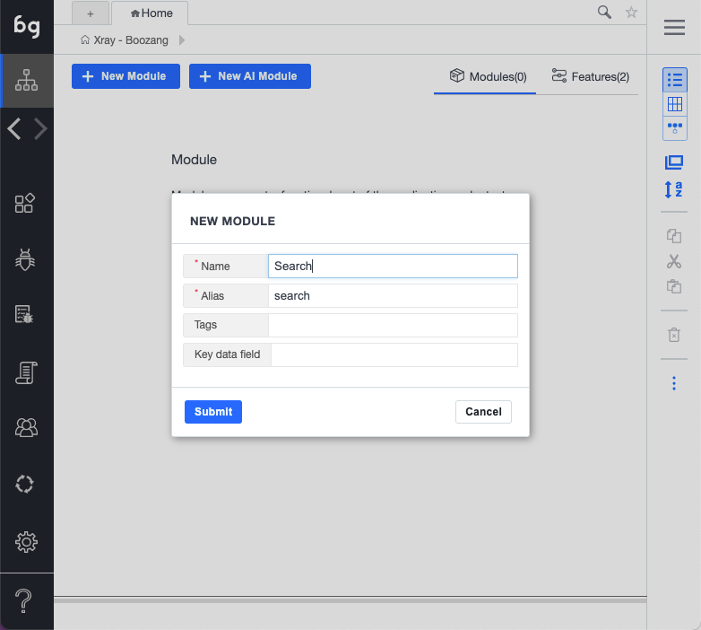
- Create test ("Navigate to Google")

- Make sure the URL is right. This test can be left blank.
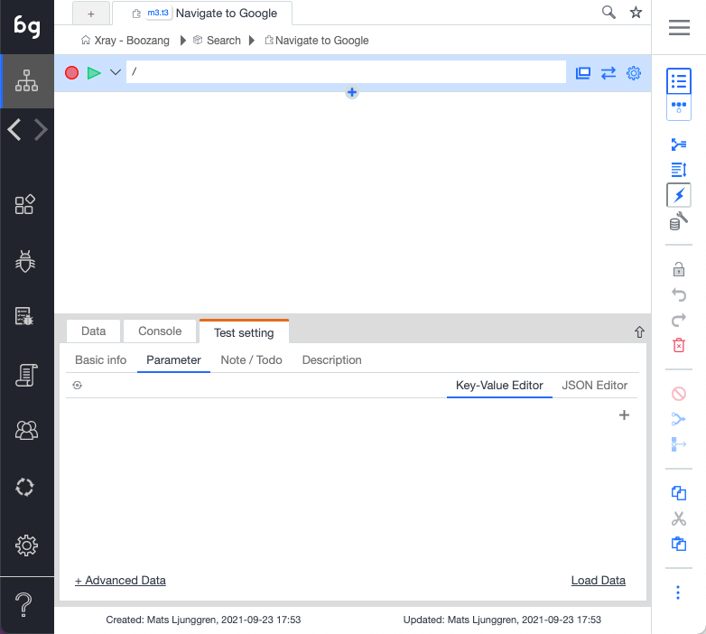
- Create test ("Search Google")

- Record a test doing a simple Google search
- Make sure you are using
$parameter.searchTermas parameter to make it data driven - Pick some good value to be the default search term ("Boozang")

- Create validation test case for the "Then" condition

- Now you should have a search module with the following tests
Linking the tests
Now it's time to link all the tests. Make sure all the test steps in every scenario goes from "red" to "black".
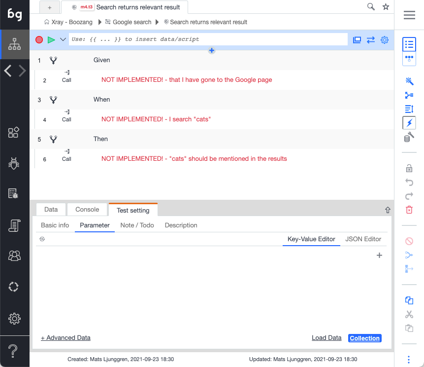
- Click on a test step marked as "NOT IMPLEMENTED"
- Link the test step using the drop-down

3, Link all test steps until they go from "red" to "black"

Dry-run the test
Now it's time to dry-run the test. Press play and make sure the test excutes successfully.
The tool
In this section, we explain all the toolbars and controls, basically what does what. You can skip this section and use as a reference when you get stuck or have some questions.
The sidebar

Boozang icon
Clicking the Boozang icon is a shortcut to bring back the user to the project root.
Test Authoring
This is the main view to create test cases and organize them in the project tree. The test cases you create is organized into modules, to ensure maximum reusability.
Bugs
Bug authoring view. Use this section to record bugs, which are most often visual discrepancies of your application highlighted by the comment function.
In this view, you have access to all authoring tools, with the difference that bugs can be assigned to other members of your team.
Root causes / Known issues
Bugs that encountered during your tests can be mapped to known issues, and categorized an application issue, automation issue, or unknown. Boozang captured a checksum of the error, which allows you to recognize an issue as it re-occurs. Here you can also link them to an existing TR / bug report in an external system. This classification also plays a roll in the root-case analysis.
Reports
The report view contains the report of the test runs. The latest test run will be shown by default, but previous test runs that were saved, either from the IDE or from a CI run, can also be loaded from the server. In this view, a user can also access operation logs, which contain all project updates, and request logs.
CI server / Worker view
In this view, you can find integration wizards for most common CI servers: Jenkins, GitHub actions, GitLab, Azure, and Circle CI. Boozang will integrate to any CI server with Docker support, so there is a generic Docker option as well, to facilaite this. In this view, you can also monitor all active workers (test processes) that are currently running.
Settings
The project settings allow the user to set: Environment, Content Policy, Notifications, and Preferences.
Tools
In tools, you will find import and export tools for the project. This allows an admin user to backup projects and also to import projects from other users. There is also a powerful free-text search that can search both modules and test and data, and perform replacement as well.
Recently the ability to branch the project version, and merge branches was also added. This powerful functionality enables collaboration much like the beloved versioning system Git, and allows you to align the automation process with the software development process.
The hamburger menu

Management
Takes the user to the Boozang Cloud Management interface. This allows the user to switch between projects.
Account
Access the account page. Here you can see current service usage and your current license tier.
Post ticket to Boozang
Open a ticket directly to Boozang support from the tool.
Chat & Message
Opens a popup chat with the team. Here you can monitor project activity and chat with other project members.
Video Tutorials
This is a link to the video tutorials on the homepage.
Documentation
This is a link to the latest version of this document.
Video Helper
This opens a small helper that gives you topic-based video help based on certain topics.
Note: Some of this video material may have been recorded on top of previous versions of Boozang.
Sign Out
Log out the user.
The top bar

New tab
Open a new tab.
Current tab
Boozang supports tabbed navigation similar to a desktop IDE like VS Code. Helpful when working on several tests at once.
Navigation bar
The navigation bar tells you where you are in the project tree, and enables you to quickly navigate it. From the image
- Project: The New Lab
- Branch: master
- Module: Forms
- Test: New test
By clicking any entry or arrow in the navigation bar you can navigate the tree. For instance, to change branch, simply click "master". The navigation is similar to Jenkins, where clicking an entity will navigate you there, while clicking an arrow will allow you to navigate between modules and tests, respectively.
Bookmark
Bookmark tests and modules as you see fit by clicking the star. Simply click the star a second time to remove bookmark. The bookmark menu will show on hover.
Search
Search the project for any test, module, or Cucumber test step. Use advanced testing to do more specific searches, like variable names or page elements.
Record
Start a recording of a test. If application window is closed, it will open at the give URL.
Play
Plays the test from the URL given.
Application URL
The URL for the test. If you want the test execution to be based on the current application window state, make sure to set the test reload policy to "Never reload".
Open Window
Opens the application window at the current URL.
Requests
Registers all requests to the back-end, such as Restful API calls. Click to open API "snoop" menu, that allows you to record API tests by doing UI interactions.
Test Settings
Set specific settings for the test execution. The default settings is usually ok, so this is normally not necessary.
The action list

Event
An icon, word, or both that indicates the action type. The different action types are Set, Validate Result, Mouse Event, Keyboard Event, Extract data, Javascript, Comment, Refresh Window, Plug Test, and Visit Links.
Tip: Clicking the action icon toggles breakpoints. Test execution is temporarily stopped at breakpoints, allowing for troubleshooting of tests. To resume playing the test, click the play button.
Action description
This is the human-readable description of the action and defaults to the actual action code. If needed, this can be changed on the auction details page.
Value
The value used for applicable events (Set, Validate). Orange indicates that dynamic data is used. The following data scopes are available: $parameter, $test, $module, $project, $loop
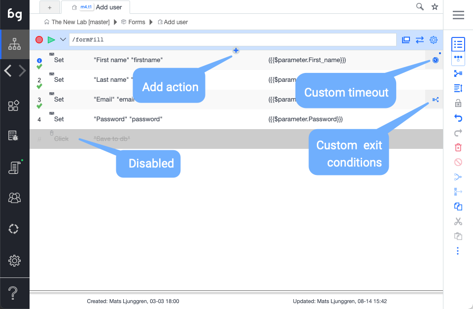
Add action in list
Inserts a new action in the action list manually. As events are often recorded, most other action types will be added in manually. The actions can be added during an active recording section, or when the recording has stopped.
Run action
Double-click on an action to execute a single action.
Custom timeout
Indicate that the timeouts for that particular action have been customized. This can be done by editing timeouts in action details. In the case of slow response times during recording, this will also be added automatically to ensure test stability.
Custom exit conditions
Indicate that exit conditions for the action have been customized. Exit conditions signify what action is taken on a certain action outcome. Action outcomes are Success, Fail, and Error. Success means the action was executed successfully, Fail means that it executed falsely, such as validation fail, and Error means element not found.
Record / Play

Recording
To record a test, click on the record button. Boozang will now catch any action being made in the application window. To stop recording, click stop. In the case where the application window is closed, the record will open the application window at the current URL. Use the Reload URL button to make sure that the URL is set correctly before recording.
Playing a test
To play a test, click the Play button. To play the test from the start; make sure that the first row (gray) row of the action list has been selected as this signifies the actual test. You can also play a test from a specific action. Simply select the action you want to play from and click the Play button. You can choose to watch all the actions play and see the result in real-time, or switch to the report view to see the report being generated.
There are several play modes available
-
Play test case
Plays to end. Launches AI repair if element not found, but continues after a set time.
-
Remote play
Plays the test, but tries to repair it when the element is not found.
-
Play upstream test
Plays the top parent test case. In case there are many of them, you will be prompted to select the test to run.
-
Step forward
Plays the test one step at a time.
-
Play in demo mode
Plays the test case step-by-step and highlights all actions in the application window using annotations (compare comment function).
-
Generate action screenshot
Plays the test and generates screenshots for all steps.
-
Automation mode
Emulates running the test from the command line using the Boozang test runner. After a test has been run, a dialog will show allowing the user to opt-out of the browser shut down. Running in this mode will notify all report subscribers, so it´s a good way to test email notifications.
Running in automation mode never activates AI repair.
The Toolbar
Switch view: Table / GUI
The switch view button toggles between table and diagram view.
The table view should be used when authoring tests, and is the view you will use a majority of the time. The GUI will is useful to understand how the test intercats with other tests.
Navigate to parent
Navigate up the testing tree.
Expand action rows
Expand the action rows to show more test information. The expanded view is useful to troubleshoot passing of parameters and customized exit conditions.
Lock
Lock the test case to prevent other team member from modifying the test. As tests are auto-saved in Boozang and all other team members recieve these updates automatically, all tests are unlocked by default.
Undo / Redo
Undo or Redo latest modification.
Delete
Deletes one or several actions. You can also use the "Delete" key.
Tip: Use Ctrl/CMD functions to multi-select.
Disable
A disabled action is skipped when a test is run. Useful to debug tests.
Group
The group function group's actions together. This allows you do keep your test in order, and to skip a set of actions using the exit condition Exit Group. By using Else-group, this can be used to implement simple conditional functionality (compare: if / else)
Tip: Use Ctrl/CMD functions to multi-select actions.
Generate test case
Breaks up a group of actions into a separate test and replaces the group with a reference to that test (Plug-test case). It allows you to quickly refactor your tests to remove duplicate action sequences.
Tip: Use Ctrl/CMD functions to multi-select.
Cut / Copy /Paste
Standard Cut functionality. Use Cut and Paste to move actions between tests, tests between modules, or data between tests and modules.
Tip: Use Ctrl/CMD functions to multi-select.
Kebab menu (...)
This menu contains functions that are used less frequently.
Element selectors
The element selection policy has undergone changes related to our 6.x release (April 2021). I recommend checking out these updates in on our blog: https://boozang.com/element-selectors/
Being able to identify HTML elements in your application is central to test automation. Boozang has a unique approach to this, so it's worth spending some time learning about it. Normally, the record function takes care of capturing elements very well, but the unique Boozang selection policy enables us to do very powerful data-driven development, where dynamical data can be used as selectors.
A note on element selection policy
Our element selector policy is based on natural language. This means Boozang primarily uses what an end-user sees, rather than hidden element attributes, such as class or id.
This has the following benefits:
- Great support for applications with dynamic classes and ids
- Automated form fills
- Intelligent test repairs
- Closer alignment to requirements
- Auto-generation of tests through model-based testing
Great support for dynamic classes and ids
By not relying on attributes like class or id by default, recorded tests are not broken when these are changed in the application. This makes Boozang well-suited for testing on top of applications with dynamic attributes. For special cases where you need to depend on id or class (such as extracting data), the user can opt-in to use these attributes.
Automated form fills
It's also great to handle data. The following form example illustrates this
In Boozang, the element locator would be based on the strings first_name and last_name. This will allow us to automatically match the following JSON data
{
"first_name": "John",
"last_name": "Doe"
}This might seem like a small win, but this can make a huge difference when testing data-intense applications, and when making form fills based on spreadsheet data.
Intelligent test repairs
By basing the element locators on what the user sees, tests are sensitive to updates to the element verbatim rather than other invisible attributes. This means tests often fail explicitly for changes in the UI, which allows the user to re-select the element from the tools. For instance, when a button text changes from "Create" to "Add", the next time it cannot find the label "Create", it will scan the UI for "Add" and suggest the update.
Closer alignment to requirements
As the selectors are based on what the user sees, the test code will read much like a requirement. This means that tests in Boozang are closely aligned with the business domain, making it easier to create a "living document" of the code. This makes it easier to keep requirements up to date and to have a single source of truth.
Auto-generation of tests
With the introduction of requirements into Boozang (for instance, with the introduction of Gherkin tests), we can apply machine learning to suggest test code based on the Gherkin syntax. As the Boozang test automation language is a type of natural language, we can apply simple NLP machine learning to suggest test code without the need for test authoring.
A note on other machine learning tools
It's also possible to use machine-learning on the element selectors, like
weigh1 * .someclass + weight2 * #someid + weight3 * “Some text”
This can give short term benefits in terms of stability, but can also introduce noise and false positives. At Boozang we believe that what has been written in a requirement (and what is seen in a UI) is the truth, not what a developer decided to put in a class or id attribute. This is why we apply a stricter element policy and action representation. By doing this, we can create a model of the whole application, resulting in higher impact on productivity and better test coverage.
Selecting the element
Boozang uses custom element selectors based on what a user will see rather than classes, ids or other attributes. This means that to use class or id, this usually needs to be explicitly defined. By avoiding using classes and ids as primary identifiers, Boozang tests become very stable to code changes and can automate applications with dynamic ids and classes freely.
The element bar
For most actions, the user can select an element (Validations, Events, Javascript and Extract Data). When recording or picking an element Boozang tries to guess the best path to the element. Usually, this is sufficient, but sometimes this needs to be edited.
Re-picking an element
The first step if an action isn´t working as expected is to re-pick the element in the application window. To make sure, double-click the action and confirm that the action is working.
Tip: Click on the element dialog and see if the correct element is highlighted in the application window.
Edit element with DOM picker
If this is still not sufficient, you can try to edit the element. If the current element is not found in the application window, the user will be asked to pick the element. If found, the DOM picker window will be launched which allows the user to fine-tune the element path
Understanding the DOM picker
The DOM picker allows the user to precisely specify the element selector. During recording, Boozang will under normal circumstances be able to guess the best unique element path. In some cases, it´s desirable to override the predetermined element path.
Common cases when the element path needs to be changed
Wrong element picked
When clicking on the element, if the wrong element is highlighted, this means the path isn´t good. Try picking the element once more using the "Select element path" button. If the problem is still there, edit the element path by clicking the "Edit element path" button. This will open the DOM picker and allow you to adjust the policy for how the element is selected.
Element index > 0
If the element index > 0 it means that the element isn´t uniquely identified. This will be indicated by a warning. Use the DOM picker to make sure the checkbox icon turns green (meaning element index ==0).
Extract data
When extracting data, the data itself should not be used as an element selector. Use the DOM picker to the key of id or class, or other attributes.
Element path operation
The element path has the following operations. Boozang uses an expanded version of the jQuery selection standard to create a more human-readable code to identify elements. The basic pattern is that the lowercase jQuery standard operations, while uppercase operations are case-insensitive. All recordings will generate Uppercase operations by default. The operations that will be recorded for a test-case is marked by an asterisk (*)
endContains (*): True if the selected element (case-insensitive) have the exact string alongside other strings
Ex:div:endContains(lws)
Yes:<div>lws ok</div>
No:<div>lwsok</div>
Yes:<div>lws <span>ok</span></div>
No: <div><span>lws</span></div>endEquals (*): True if the selected element (case-insensitive) have the exact string
Ex:div:endEquals(lws)
Yes:<div>lws</div>
No: <div>lws ok</div>
No: <div>lwsok</div>
No: <div><span>lws</span></div>equals: True if the selected element or any of its children (case-sensitive) have the exact string alongside other strings
Ex:div:equals(lws)
Yes:<div><span>lws</span></div>
No: <div>lws ok</div>
Contains (*): True if the selected element or any its children (case-insensitive) have the exact string
Ex: div:Contains(lws)
Yes:<div><span>LWs ok</span></div>
No: <div>lwsok</div>contains: True if the selected element and all its children (case-sensitive) matches
Ex: div:contains(lws)
Yes:<div><span>lws ok</span></div>
Yes:<div>lwsok</div>
No: <div>lwok</div>RowCol (*): Used to identify table cell (case-insensitive).
Ex: td:RowCol([value|name])
Yes:<tr><td></td><td>NAME</td></tr>
<tr><td>VALUE</td><td>1234</td></tr>
No: <tr><td></td><td>name</td></tr>
<tr><td>value1</td><td>1234</td></tr>rowcol: Used to identify a table cell (case-sensitive).
Ex: td:rowcol([value|name])
Yes:<tr><td></td><td>name</td></tr>
<tr><td>value</td><td>1234</td></tr>
No: <tr><td></td><td>name</td></tr>
<tr><td>VALUE</td><td>1234</td></tr>
near (*): Used to identify form input box based on labels (case-insensitive). The rule to match the first element before that shares a common parent element.
Ex: input:near(name)
Yes:<div><label>name: <input/></label></div>
Yes:<div><label>name: </label><input/></div>
Yes:<tr><td>Name</td><td><input/></td></tr>
No: <div>name</div><div><label>value</label><input/></div>
No: <div><div>name</div><div>value</div><input/></div>
Element policy
Under the kebab menu, you can also access the element policy.

Treat hidden elements as not found
Normally, hidden elements can still be clicked programmatically. Check this box to trigger Error ()"element not found") when an element is hidden.
Element re-try policy
The default behavior is to Re-try on element missing. Customize this to Never re-try or Re-try on content mismatch (re-tries when an element is found but the content is wrong).
Skip action element
Select and element that will trigger skipping to the next action. This can be useful, when having a system that responds slowly, and you have different possible outcomes, like a login confirmation. Instead of waiting a long time for an element to appear, use skip action element to skip directly to next action when an expected element shows.
Fail element
Same as skip element, except that the action fails when selected element appear. As an example, this can be useful to automatically trigger failures when error messages show.
Element script
Use element script for extremely difficult controls, that might need a combination of element events to activate. This is very rarely needed, but works as a last resort.
Repairing an action

When a test is run and an action element cannot be found the AI test repair screen will be launched. This will allow the user to re-pick the element from the application window. If a matching element is found, Boozang will suggest the element for the user. This allows the user to repair tests ultra-fast even when there have been significant code changes.
Actions
Overview
Actions are the steps that comprise a test case. This could be a mouse or keyword event, simulating a user action, or a validation (assertion) or even Javascript. There are also AI actions supported which are more elaborate actions such as "Visit Links" or "Form Fill".
Events
There are three types of events supported in Boozang: Set, Click, Keypress, and Change. These are fairly straightforward, but not obvious which event will be captured during a recording. See list of events that will be generated for different recording scenarios below.
- Set events: Generated when filling forms and using drop-downs, even customized drop-downs. Set is an "intelligent" event, and is comprised of a combination of browser events. This allows for single-action recording of customized drop-downs and file dialogs, and is part of the reason Boozang recording can be so powerful.
- Click events: Generated when clicking buttons or page elements. Not generated when clicking inside a form input, drop-down or on a checkbox.
- Change events: Generated when filling inputs in forms and clicking mouse, tab, or enter
- Key events: Generated when pressing keys in special circumstances.
This might seem contra-intuitive, but guarantees that form fills are recorded as stable as possible. Usually, regardless of user habits (using mouse or tab key), forms should be recorded the same way.
Set events
The set event is generated in the recording by merging events in the browser acting on the same component. As you can see in the form fill test below, the click events and enter text events have been merged to a single "Set" event.
There are some cases where Boozang doesn't manage to create the set event, like in the last mouse click. If this shouldn't be a click, but rather a set (input box, checkbox, or drop-down), it can be switched to a set event afterwards.

Mouse click events
This event corresponds to a mouse action, meaning a click or a movement of the mouse. By default, Boozang captures on clicks in the recording (otherwise the recording becomes very noisy catching too many events). The exception to this is when holding the mouse button down, to emulate drag and drop. In this case, Boozang registers a particular drag-and-drop event. You can add mouse events manually to emulate mouse-over events and to create specific mouse conditions.
Advanced
Here you can add additional validations as a post-condition for an action.
Change events

The change event is used to record state change in forms and checkboxes. When filling a form field, the data will be shown in brackets, like
(John Doe) or ($parameter.name) or ($test.name)
If a checkbox is clicked, the value attribute will be shown in the brackets. In the below example
<input type="checkbox" name="vehicle2" value="Car"> the action will show (car) when being checked and blank string when being unchecked.
Key events

This event corresponds to a keypress. This is captured in the recording for every time a key is pressed. The default recorded keypress is Group which will generate the following Javascript events: keydown, keypress and keyup, in that order. You can change the drop-down to generate a specific event only.
You can also generate a special key or char code by clicking the field and clicking the keyboard button.
Validations

Creating a simple validation
In a test, it´s common to make sure that a certain outcome is achieved. In Boozang, we do this using validation, also known as assertions. To create a validation, click on the validation icon and select the element to validate it in the application window. The default validation content format: "validate exists" will be created. If you want to change the validation content format you can do this using the dropdown in the tool window.
Content formats
The following content formats are supported
- Exists (default): Validates if an element exists. It generates a success condition if the element in the path exists, and a fail condition if it doesn't exist.
- Not exists: Opposite to Exists. It generates a fail condition if the element in the path exist, and a success condition if it doesn't exist.
- Dynamic Exist: Uses the value of the expectation to determine what it runs. If expectation evaluates to
trueExists will execute, iffalse, Not Exists will execute. - innerText: Used for String comparisons of the innerText content of the element. It generates a success condition if match, a fail condition on mismatch and an error condition if element doesn't exist.
- Input value: Used to do String comparisons of an input box. It generates a success condition if match, a fail condition on mismatch and an error condition if element doesn't exist.
- Is Enabled: Check if an element is enabled. It generates a success condition if the element is enabled, a fail condition if the element is disabled, and error if the element doesn't exist.
- Is Disabled: Opposite of Is Enabled. It generates a fail condition if the element is enabled, a success condition if the element is disabled, and error if the element doesn't exist.
- Is Checked: Checks if a checkbox is checked. It generates success if the element is checked, fail if the element is unchecked, and error if the element doesn't exist.
- Screenshot: Does a pixel-by-pixel comparison of an image. After an element has been selected, a checksum is generated of the image content. This action will generate success if an identical image is found at the element location and fail otherwise. An error will be generated if the element doesn´t exist.
- Data: Check an element if it contains a set of data. The data expectation can contain several data entries. It generates success if all data is found in any order, fail if any data is missing and error if element doesn't exist. Powerful to check if a table or list have a certain data entry.
- Script: Write custom validation using Javascript. Generates success if true is returned and fail if false is returned.
- Request/Response (API): Does a validation on an API end-point. See section for API testing.
As you can see, a lot of these commands have three expected results: Success, Fail, and Error. Note how Exists and Not Exists should only be able to return Success or Fail.
Compare
This is the comparison operator. The following operators are self-explanatory
- Equals (==) and Not Equals (!=).
- Greater-than (
>), Greater-than-or-equals>=). - Lesser-than (
<), Lesser-than-or-equals (<=).
and these are a bit more complex
- regex: Use regular expressions in the Expectation field
- Include: Checks for any occurrences of a String. It generates success if it finds a match and it will fail otherwise. If the element doesn't exist, it generates an error.
- Exclude: Opposite of Include. It fails if it finds a match, success otherwise. If the element doesn't exist, it generates an error.
Expectation
This is the comparison value to use. This could be a string or regular expression (in the case of the regex operator).
Advanced (accessible from kebab menu)
This is used to pre-process a validation and is useful when filtering out dynamic data.
Imagine the following example:
<div>
The date is 2019-09-12 and I'm feeling good.
</div>In this case, it would be desirable to validate the message itself and that any date is shown, but not a specific date. By setting Match and Replacement String like
Match: ([12]\d{3}-(0[1-9]|1[0-2])-(0[1-9]|[12]\d|3[01]))
Replacement string: YYYY-MM-DDThe expectation value for Validation Equalsbecomes
<div>
The date is YYYY-MM-DD and I'm feeling good.
</div> This can also be used to make sure sensitive information doesn't end up in any reports or on the Cloud server.
Javascript validations
The default validation is HTML validation. By changing the method to "Script", you can directly do validations using Javascript. The Javascript function is written in the standard Boozang format
(function(){ //return true/false; })()
and must return true or false. If an element has been picked with the DOM picker this will be available using the handle $element. Standard data handles, such as $project, $module, and $test will also be available, as well as the test window handles $TW. For more information about data see data section.
Extract data
This is used to extract data from the application window and to store in a data variable.

Default behavior
When you add an extract data action, you'll be prompted to select something from the application window. As you can see from the example, data is extracted the following way
$test.tmpValue=$element.innerText.trim()This is just an example to help you along. If you have your own data variable, for instance $project.myHappyData you can simply replace the code in the Extract Data field.
$project.myHappyData=$element.innerText.trim()Dynamic data and element selector
When selecting some data in a page that is dynamic, such as a database id or project name, it's important to pay special attention to the element. By default, Boozang natural language selectors will try and identify the element by the actual text, which would be changing, generating an element not found error.
Here it is needed to click on "Edit element" icon to open the DOM picker, and explicitly choose a selector that doesn't contain the dynamic data. In the example below, tiger is the dynamic data that was highlighted by default. To extract this data, we have instead chosen to use a selector based on the attribute class which should be equal to string1 (denoted with Javascript shorthand below as .string1).
.
Javascript
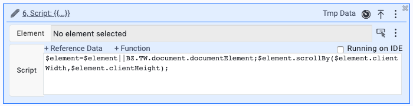
The Javascript action
Boozang also allows you to execute Javascript directly in the application. This can be very useful when trying to do more advanced things that aren't covered by the set of actions Boozang has out of the box.
Syntax highlighting
In Javascript mode, you'll get syntax highlighting, similar to a desktop IDE.
Red more in our blog: https://boozang.com/new-feature-code-editor/
Debugging Javascript
to debug Javascript, you can add breakpoint directly in the code. This will activate the Chrome browser break-point, and gives you the full capability of the browser debug, such as step forward and inspect data. That means that you'll need to open the browser console to make sure to enable this.
Reference Data
When writing Javascript, there are some particularities in Boozang that need to be respected. To access the application window, you will have to use the handle $TW (test window). This means that to manipulate the application window document tree (DOM), the user needs to use $TW.document. When referencing the only document, it references the Boozang tool window, not the application window.
In Boozang, you can reference data directly in Javascript. To access data, use the handles $project, $module, or $test, depending on what level the data was added. For instance, to reference a username that was added on the module level, use $module.username.
Function
Boozang also supplies pre-made code snippets for the following common scenarios.
- Load page
- Browser back, Browser forward
- Scroll to Top, Scroll to Bottom, Scroll one page down and right, Scoll one page up and left
- Retrieve URL
Use these as-is or as starting points for you own custom Javascript commands.
Trouble-shooting
To troubleshoot the application, it's sometimes useful to add debugging code. For instance, to write the contents of the module-level data "username" use console.log($module.username) to write it to the tool window and $TW.console.log($module.username) to write it to the application window. You can use the Chrome developer tools to verify this.
Tip: Avoid using $TW.alert() as Boozang interprets this as application popup windows and intercepts them.
Comment

Why use comment
In some cases, errors can only be spotted by a human, such as UI bugs or poor choice of language. In this case, it can be useful to point this out so a team member on the receiving side can correct this. For these cases, we use the Comment action.
The Comment action
The comment actions add a comment, or annotation, to the application. To add a comment, click on the Plus icon and select Add Comment, and select the element in the application page to Comment. You can write directly into the Comment dialog on the application.
Running a test with comments
When running a test with comments, the test will execute and stop at the first comment. To skip to the next comment, press play again. This is very useful when fixing look & feel issues, as several issues can be recorded in the same test case.
Show selection for Pass/Fail
Sometimes it's nice to create a checklist for a manual tester to be guided through the application. You can use the Comment action to ask questions to the user and generate success or failure code based on user inputs. Simple click the "Show selection for Pass/Fail" to generate this kind of interactive comment.
Refresh window/Load page
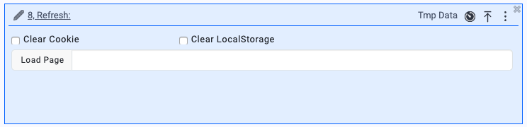
The refresh window/load page action is used to force a reload of the browser window. This can also be used to force loading a new page (meaning going to a new page without having to navigate to it). There is also an option to Clear Cookies and Clear Localstorage.
Note: There are security limitations for the web browser we cannot get around. For instance, the browser does not allow session cookies to be deleted, so this cannot be triggered by the Boozang tool.
Visit Links

The visit links action is used to automatically crawl a set of pages based on a navigation bar. To crawl a full navigation panel, such as side navigation or hamburger menu, select this in the Panel option. Target element defaults to "A" tags but can be changed using the DOM picker in case the navigation contains a different element than regular links. It's possible to execute a script before each click, but this can normally be left blank.
For each click, it´s normal to call a test case. Use Goto Test Case to select a downstream test case. This test case will be called for each link in the selected navigation panel.
Using data

Data is used to be able to create data-driven tests. This means that a test that takes data as input (for instance: "Login" or "Create Project") can be re-used for different data sets. Data handling is at the core of Boozang, and a large variety of data types are supported.
Introduction to data types

Boozang supports several different data types: Property, Object, Array, CSV, File, Request data and JS (Javascript function).
Properties
The property is a simple name-value pair and can be referenced directly. For instance, a property username = boozang added on test-level, can be referenced {{$test.username}} (=boozang).
Tip: You can verify this in execution by printing it to your application console window by creating the following Javascript action$TW.console.log($test.username).
Objects
Objects in Boozang are the one-level sub-set of JSON objects and are ideal for grouping related data together. For instance, create the Object loginInfo and add username = boozang and password = p@ssw0rd. The data can be referenced by typing {{$test.loginInfo.username}} and {{$test.loginInfo.password}}.
Array
The arrays are great for storing a list of items.
Tip: Arrays can be used to drive data loops
CSV data
CSV data allows you to handle a large collection of Objects and copy data from software such as Excel. Create a name for the collection, such as inventory items. Start by adding the field names as headings separated by tab spaces. When you are done defining the data, hit Enter and fill out the values tab-separated. Pro-tip: You can copy a whole table from Excel by using copy-paste.
Tip: CSV data can be used to drive data loops.
File data
File data is used to test file upload and similar user interactions. Try and use small sample files as large files tend to weight down on the test client, consuming memory or slowing down performance. It is also recommended to fetch files from an external source (see Request Data).
Request Data
It is also possible to fetch data from an external source. Simply type in a URL and choose CSV, JSON or File. The CSV file should be comma-separated (field1name1, fieldname2, \n value1, value2) and not tab-separated.
JS (Javascript functions
It is also possible to specify Javascript functions directly. The functions can be in two forms: Date.now() or fining the data hit Enter and fill out the values tab-separated.
Tip: You can copy a whole table from Excel by using copy-paste.
File data
File data is used to test file upload and similar user interactions. Try and use small sample files as large files tend to weigh down on the test client, consuming memory or slowing down performance. It is also recommended to fetch files from an external source (see Request Data).
Data binding
A note on form fills and data
When recording a test, any data entered into a form will be recorded as well. Usually, this will happen when pressing Enter key, tab key or when using the mouse to click the next field or submitting the form. Sometimes it's sufficient to record a test with a certain hard-coded set of data. More often, it´s desirable to capture data into variables so that the test can be re-used for several different sets of data. Boozang makes this very easy to do.
Binding from forms to data
One way of capturing data into variables is to start on the application side. When entering data into the form, click the "Bind data" checkbox in the toolbar and select the data scope you would like to capture the data. While typing, you can see that you are prompted to save the data in a variable. When you fully typed out the field, click the desired field name and the data will be saved at the appropriate data scope that you selected.
Binding from data to forms
There is also a different way to fill data. Start by entering the data (normally as a JSON object), and after this, click the "Bind data" checkbox and select the data scope where you entered the data. When starting typing, you can see that the data in the data scope is suggested to you. Click on the suggested data, and it will be automatically typed into the form and bound into the event action.
Auto-filling forms from data
As you can see, any data key names that correspond (matches case-insensitive / white-space insensitive) to the form labels will be suggested when binding data to forms. If you have organized your data well and made sure all data keys match the form labels, you can click the Auto-fill link and all the form events will be generated automatically.
Tip: This can greatly speed up test creation of form fill tests, so try and learn this naming convention.
Defining regular expressions

Boozang regular expression engine
Boozang also supports a regular expression engine that can generate random data that complies with a certain regular expression. This can be useful when generating random test data, but also when creating test validations to make sure certain field constraints are being enforced.
Setting up regular expressions
To set up a new regular expression, click Settings -> Content Policy and scroll down to the regular expressions. Here you can find several pre-defined regex and associated labels. First, make sure the type of regular expression isn´t in the list. As a phone number or zip code will vary from country to country, it´s natural that these are modified to match your specific project.
Also, make sure that all possible labels are matching the indicated regular expressions. This way, auto-fill functionality and future AI functions will be able to better identify different fields and make "better guesses".
Setting up a new regular expression
To set up a new regular expression, click new and add in the necessary fields. The Field mapping will determine which form labels to look for when trying to match data. Use the OR sign ("|") to separate several fields.

Using auto-fill functionality
When using the auto-fill functionality in the toolbar, the Boozang tool without choosing to data-bind, Boozang will use the regexp engine to generate data into the form. When recording, this can be used to quickly create test cases with temp data.
Binding auto-fill with data-bind
When enabling data-bind and clicking autofill form, Boozang will look in the current data scope for matching data. If that isn´t found, Boozang will use the regexp engine to automatically bind the data scope to the form. This is a great way to quickly create a data-driven test case.
Tip: Using autofill with data-bind on $parameter scope is a quick way to create a versatile, data-driven test case.
Pre-defined regular expressions
There are also pre-programmed regular expressions in Boozang that can be used. Here is a list of the current ones.
Data formatters for date and time
For data and time date, the default data format is YYYY-MM-DD, meaning that for 26th of November 2019, /{today}/will output 2019-10-26. You can also input a data format string, separated by a pipe |character. Here are some examples,
- No format string:
/{today}/outputs2019-10-26. - With minutes and seconds dot-colon-notation:
/{today|YYYY.MM.DD:mm.ss}/will output2019.10.26:30.29 - Only month and day:
/{tomorrow|MM-DD}/outputs10-27
Date and time
The following pre-defined expressions are available. All examples are based on today being Saturday, October 26th, 2019.
/{today}/outputs2019-10-26/{yesterday}/and/{tomorrow}/and outputs2019-10-25and2019-10-27/{today-7}/outputs2019-10-19(last week)/{last-mon}/and/{last-tue}/outputs2019-10-14and2019-10-15/{last-month}/outputs2019-09-26(this date previous month)/{last-year}/outputs2018-10-26(this date previous year)
Troubleshooting data
Console window

When running a test, it is sometimes desirable to inspect the data that is being run. In many cases, upstream test cases are sending data as parameters, and it gets even more tricky when data is being loaded from external data sources or Javascript functions. To inspect the data that is being used, you can use the console window. This window is located in the hamburger menu and allows users to spy on data.
The console can be used to check the following data:
- Assigned data:
$parameter,$test,$module, and$project - Loop data:
$loop - Regexp data generators:
/[a-z]{3,10}@bzmail[.]com/(email),/[A-Z][0-9][A-Z] [0-9][A-Z][0-9]/(Canadian zipcode) - Complex data generators:
/{today|YYYY-MM-DD}/,/{tomorrow|MM/DD hh:ss}/
Tmp data
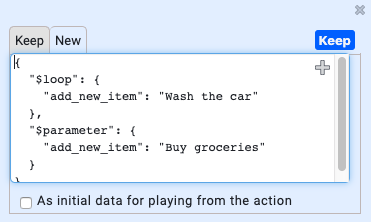
There is also another way to inspect data and do more advanced troubleshooting. For each action, in the action details menu, you can find a link called "Tmp data". This data is updated every time a test is run and will show the data that was used when the action was run. This allows you to keep the last input data that was used and replay the action with this data.
To inspect data during a run, add a breakpoint to the test or pause the test case during a run. Click on the action that uses the data, and click "Tmp data" in action details.
To re-run the action with the data that you see in the "Tmp data" window, check the checkbox "As initial data for playing the action". To keep this data (not override the data in the next run) hit the "keep" button, and the data will be saved in the keep tab.
Tip: Hit keep and Save to save the action data in the database to troubleshoot with other team members.
Settings

Settings allow you to customize Boozang to work with your application. It also allows you to set your personal user preferences. "Content-Policy" and "Element Definitions" are somewhat complex, but can be potentially very helpful for more complex testing scenarios.
Environment
In the Environment tab, you can find several useful functionalities. You can manage environments and different application interfaces, configure settings on an application interface level and also setup AI login/logout for different roles/users.
Enviroment and application interfaces
There has been some confusion around environment and application interfaces, so it's important to make sure you get this right as it will save you potential work in the future. Environments signify an environment, such as development, staging, QA or production. By specifying different entry URLs for these environments, test become completely re-usable. This means there is no need to maintain different tests or projects across different environments. Simply change the environment setting and re-run the same test.
The application interface setting handles when there are different applications within the same environment. For instance, in the E-commerce case, there might be a storefront and a managememt interface. When creating a test, pick the interface that the test is for. If this changes during the project, it has to be changed in one place, not across several tests.
Advanced / Configure
This setting allows you to configure certain things on an Environment / App interface level. These settings will typically be things that could vary across environments, such as delays and other performance-related settings.
AI login / logout (Authorization Setting)
This allows the user to define several user roles and automatically generate the login and logout scenarios for these roles. The user roles can be set as pre-requisites for tests, automatically switching between users. For more information, read more under the Model-based testing chapter.
Content-policy

The content policy contains several advanced features. Nevertheless, spending some time here to fine-tune the project can increase the stability of tests and also speed up test creation significantly.
Ignore validation on pop window
When checked, any pop windows (alerts, prompts, confirm pop-up dialogs) will not be verified by Boozang. When un-checked, Boozang will add an assertion during recording based on pop windows that appeared. On playing back the tests, Boozang will make sure that the same pop windows appear as during the recording and fail the test otherwise.
Ignore Classes
Normally when clicking or asserting an element, classes are ignored. There is also an explicit setting for you to highlight your dynamic classes to make sure it´s ignored.
Text Attribute
Clickable Elements
List of elements that are clickable in your application. Add elements here to be able to easily capture clicks on these elements during recording.
Attribute Content for Autofill
Use this to set regular expressions to be used for content generation.
Element Definitions

Element definitions contain the classification of all elements in the customer applications. This is mostly used for model-based test generation. See chapter on model-based test generation in a later chapter.
Customize Input Component
Use this to record customized input components. This will allow you to capture customized drop-down and special controls, such as date-pickers.
Tip: After setting up a date-pickers,t his can be recorded as a single action, and data can be used in the format you specify (for instance: YYYY-MM-DD).
Aliases

Aliases are used to define shortcuts to certain test suites. This is most often used to be able to easily control which tests are being run, without having to update any upstream services, such as CI servers or similar.
Image the scenario where you have a CI server that runs smoke-tests, regression tests, and full product tests. Now it's simple to define the aliases "smoke", "regression", and "full" and point these aliases to the tests in question. If you want to try to temporarily switch any of these aliases to run a different test suite, this can be done without updating anything on the CI server.
Preferences

This controls individual user preferences. These settings will only apply to your user and not to the project as a whole.
Accept to be monitored
Functionality to allow other users to see all work done by the user to be monitored by another team member.
Tip: This can be used to display the CI server runs on a dashboard
Disable alerts for load file errors
Do not show any popup warnings for external files that cannot be loaded.
Disable alers for AI repair (on test execution error)
Don't show AI repair dialog when the element is not found.
Note: This will never be shown when running in automation mode.
Disable alerts for un-saved data
Never show the save test case dialog when leaving a test with un-saved data.
Auto data-bind
When enabled, data-bind will be enabled by default.
Auto insert data validation
This still exists.
Notifications
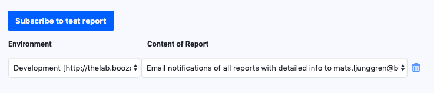
This view allows a user to set up email notifications for a report. It means that every time a test is run from the command line, any users that have subscribed to notifications will receive the report in his/her mailbox. To test out the notifications from the tool, make sure to run the test in Automation play mode. This will trigger the notifications.
Tip: A user can only set up his/her own email notifications. This allows team collaborators to opt-in and opt-out from report email, and prevents unwanted spamming.
Other tool views
Reports

The report view
The main report view contains the report from the test that was run in the browser last. The report view reflects only local runs of the test and is not in any way a consolidated view of reports (this consolidation can be done in a data warehouse or CI server).
The view link
To find tests quickly, click the View link to go to the test. This is especially helpful when the testing report has been sent via email.
The diff link
If an assertion fails that has content, such as Validate -> innerText, you can use the diff link to see the difference in content between the reference and resulted response. For dynamic data, hover over the name to see the values that were used.
Performance warnings
To highlight slow actions or tests, this can be done under Environment -> Advanced -> Performance Reminder. Here you can adjust settings that can trigger slow tests to trigger warnings or even fail tests.
Team

Adding team members
It's quite straightforward to add a team member to the project. Any team members email you add will receive an email notification with instructions on how to join the project.
Access policy
Not all users are created the same. To learn about the details of the access policy check out the management interface at https://ai.boozang.com and check the project details. Here you can get a breakdown of the detailed access policy and also customize a role.
The CI user
Sometimes it's useful to create a CI user with only execute privileges. This way, anyone with access to the CI server will be limited to only run tests, not edit tests or invite other team members.
Tip: It's highly recommended to create a CI user with limited privileges and use the CI user token to run tests from any CI server. This will minimize any potential security problems or web socket conflicts.
Chat
There is also project collaboration built-in. Use this to communicate with team members and see test updates as they happen in the project.
Tip: This will also be used to link to Slack updates (Roadmap).
Synchronize

Use this function to see all local updates (the difference between your local storage and what is saved on the cloud storage). This allows you to save all changes in bulk or revert or local changes.
Tools
Tools contain a function to import and export a project and to do bulk operations.

Import
This is used to import a project file that has been generated using the Boozang export function. This is useful when restoring a backup or replicating a project.
Note: Before running the import, it's best to clear the existing project, meaning delete all modules.
Export
Use this function to export the whole Boozang project to a data file. This project export file can be saved on disk or in a secure location and restored using the import function. This can be used to back up a project, create a project duplicate, or share a project with Boozang support.
Batch
This powerful wild-card batch operation is used to search both for projects, modules, tests, and data. Useful for large projects to locate lost data and for doing quick project cleanups.
Advanced testing methods
Data Loops
A loop means to repeat execution until a certain condition is fulfilled. In Boozang, a data loop is like a for-condition running over a data set, meaning the test gets executed once for each data entry.

To set a test to loop over a set of data (to repeat its execution for each data entry), click on the first line of the test (denoting the test settings) and click the Kebab icon -> Advanced. In "Loop data" select the data you want to loop over. The test will be run once for each data entry, and the current data entry will be available in the $loophandle.
The following data formats are supported to drive loops
- CSV: The assigned
$loopitem will be ofObjectformat (JSON) - Arrays: The assigned
$loopitem will be ofPropertyformat (String) - Request data: This is supported if the fetched data is
CSVorArray.
Matrix testing
Keywords: bz-skip and bz-stop
In data-driven testing, we support the keywords "bz-skip" and "bz-stop" to be able to trigger conditional functionality based on data. As soon as "bz-skip" occur the test will skip without generating a failure. If "bz-stop" occur the all upstream tests will stop without generating an error.
API testing

Starting from release 6.5.0, deployed on 16th of August 2021, the API testing was changed dramatically (for the better). Please consult our blog: https://boozang.com/advanced-api-testing/ and https://boozang.com/api-testing-with-boozang-and-json-server/.
AI authorization
 In application testing, there will be a need to establish pre-conditions. In most SaaS applications, this is a matter of determining who is logged in. Instead of relying on trying to mimic users by spoofing cookies or other tricks, it can be done by recording the login and logout sequence of users, shifting between users by using logout and the login form.
In application testing, there will be a need to establish pre-conditions. In most SaaS applications, this is a matter of determining who is logged in. Instead of relying on trying to mimic users by spoofing cookies or other tricks, it can be done by recording the login and logout sequence of users, shifting between users by using logout and the login form.
Setting up
A key in this procedure is to have login credentials for the different roles that have access to the application, and record a single login/logout sequence for that user and find an identifier for who is logged in.
Enabling AI authorization

Launch the authorization wizard by clicking Enable AI authorization when setting up the environment.
Authorization settings

This will open another screen that allows you to enter credentials
Mapping module
The name of the project module where the login and logout cases will be stored.
sign in(test-case)
The name of the sign-in test case
sign out(test-case
The name of the sign out test case
Mapping data
The name for the data to map login credentials
Role table (Unique key
Set a unique key for the user
Username
The username that is used in the login procedure
Password
The password that is used in the login procedure
User identifier
This field is used to uniquely identify the user. This can be an identifier visible right after login, such as the first namem a user id, or email address of the user. This is used to determine which user is logged in, and drives logic for switching between users/roles.
Generating: Sign in

- Make sure to be logged out and navigated to the login page. Click Confirm.
- Click the record button and record the login procedure. Make sure to utilize the data set in the Authorization settings screen - otherwise, the data will be hard-coded.
- Click the selector button to find an element that uniquely identifies the user.
- Click "optimize the test case".
- The sign-in test case has now been generated for all users in the list.
Generating: Sign out

- Confirm that the user is logged in. Click confirm.
- Pick an element that will only show when logged in. Note: This should not be a user-specific element but should show for all users.
- Record the sign-out procedure.
- Click "Optimize the test case"
- The sign-out test case has now been generated.
Check all accounts

- Click "Check all accounts"
- A test case that runs sign-in for each user has now been generated in the authorization module. This is useful to see how you can call Sign-in and Sign-out respectively.
Using authorization tests
Set test pre-conditions

One way of using the authorization tests is to set test-preconditions on tests. If checking a user as a pre-conditions this means as soon as this test is run, Boozang will check if that user is logged in using the unique identifier. If not, Boozang will automatically run the "sign-out" test case and run "sign-in" for the first user in the list.
Calling authorization tests manually

You can also call the authorization tests manually. This can be done by simply calling the "sign-in" test case directly.
$parameter = unique key
This will trigger a check on which user is logged in, and if it´s different than specified, it will automatically trigger a logout and logout with the specified user.
Gherkin/Cucumber support
To support Business-driven development, we have built-in Gherkin support in Boozang. The idea is that a business analyst or product owner write the acceptance criteria for a feature using Gherkin syntax (Given, When, Then). For each feature, the might be several scenarios that describe the acceptance criteria of the scenario. For an exhaustive description of the Cucumber / Gherkin language, see https://cucumber.io/
A note on the data model
In Boozang, we separate the business domain and technical domain. In the technical domain, there are modules and tests, while in the business domain, there are features and scenarios. That means that the Boozang data model works really well to handle this hierarchy.
Example test
Throughout this example, we will use the following example test to illustrate the functionality.
Feature: Google Searching
As a web surfer, I want to search Google, so I can learn new things
Scenario: Simple Google searches
Given a web browser is on the Google page
When the search phrase "
Examples: Animals
| phrase | related |
| panda | Panda Express |
| elephant | Elephant Man | Features

Just as modules act as containers for tests, features work as containers for scenarios. Features can either be created directly in Boozang or imported from a feature file.
Importing feature files
To import features, click "Import Feature". Bozang supports two types of imports
- Import from test
- Import from file
Import from text
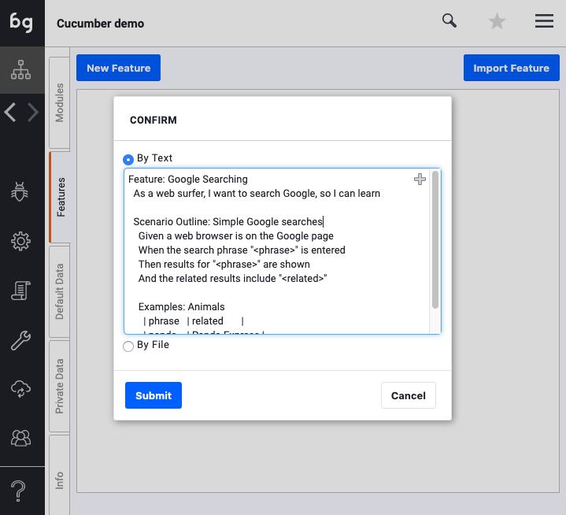
To import from text, simply paste the Gherkin feature text into the window. The feature will be automatically created in the features tab with the name specified in the Feature: section (in our case Google Search).
Boozang will now parse the Feature information and build all the scenarios inside the feature. In addition, any example data will be added to the scenarios as CSV data, and the parameter mapping will be generated automatically.
Import from file
Simply click import from file, and browse to the .featurefile you want to import.
Building your first scenarios
Unmatched scenarios
As soon as you have imported a feature, all feature scenarios will be generated automatically. As you can see from the example below, the Given, Whenand Thenare generated as Groups in Boozang, with a number of Plug test-case conditions. As you can see, the unmatched conditions are marked red.

Matching scenarios
To match a scenario, simply click on "New Link-Test" in the Goto Test Case section. This will create a new link test that matches the text "When the search phrase ? is entered" and automatically populate the necessary data.
This will automatically create a "Link Test" that translates the Gherkin syntax to executable code.

Link tests and re-use
One might wonder why to introduce link tests in the first place? Why not simply have a single mapping of Gherkin syntax that maps to a test. The answer is re-use. Imagine we have the following test: LoginHandler that takes role as a parameter. In Gherkin, we have the following statements
Given I am logged in as an Admin
Given I am logged in as a User
We would typically have to have two different functional tests. This would create unnecessary code duplication and bloat. With the introduction of Link test, we can now map this case with two different link tests, without having to create two functional tests
I am logged in as a ? pointing to LoginHandler
I am logged in as an ? pointing to LoginHandler
As link tests support parameter data, we can also further create tests aliases using link-tests
LogMeInAsAdminpoints to LoginHandlersending Adminas parameter.
LogMeInAsUserpoints to LoginHandlersending Useras parameter.
It also has a second benefit. As the Gherkin syntax of features isI am Logged in as a to the more appropriate I am logged in as, you simply have to update a single link test, and all scenarios using that phrasing will be updated automatically.
The magic wand
As you keep adding features, you will undoubtedly have created many Link-tests to tie the business domain (natural-language with examples) to the technical domain (tests with data). In some cases, you might have completed the mapping for a single feature but still have many features to complete. To not do the same work twice, you can apply existing mapping to a feature by hitting the "match icon" (the magic wand).

Running tests
Running a scenario
To run a scenario, simply use the "Play" button in the scenario list or in the scenario detail view.

A report will be generated from the scenario.
Running an unfinished scenario
In the case of running a scenario that has some "unlinked" test steps, the error message "Not Implemented" will be show in the report for these test steps.
Running all scenarios of a feature
To run all the scenarios of a feature, simply run the test suite generated that has the Feature name.
A note on performance
The feature test suite allows you to order what order scenarios should be run. This might seem unnecessary at first, as scenarios should be able to run independently of pre-conditions. Scenario run order might have a big impact on execution time. One good example is for scenarios that have pre-conditions that line up. For instance, imagine the following sequence of scenarios
Sequence 1:
- Given I am logged in as Admin, When I do A, Then I should have B
- Given I am logged in as User, When I do A, Then I should have B
- Given I am logged in as Admin, When I do C, Then I should have D
- Given I am logged in as User, When I do C, Then I should have D
Sequence 2:
- Given I am logged in as Admin, When I do A, Then I should have B
- Given I am logged in as Admin, When I do C, Then I should have D
- Given I am logged in as User, When I do A, Then I should have B
- Given I am logged in as User, When I do C, Then I should have D
If implemented correctly, both of these sequences should be able to execute successfully, as there should be no dependency on the initial state. On the other hand, Sequence 1 requires four (4) Login/Logout sequences while Sequence 2 only requires two (2). Taking into account the order scenarios are run can greatly speed up testing and also remove a lot of testing complexity and brittleness. Another telling example is scenarios Add, Edit, and Delete.
Command-line runner and test scheduling

Note: This section will focus on running Boozang from the command line. For readers not familiar with CLI and Docker this might be a little technical, even though most of the commands should be working doing a direct copy.
Test URLs and authorization
Even though tests can easily be run using the web browser, there will be a need to trigger these tests without manual interaction. The most common scenario is to run a set of tests when code is pushed into GitHub or other versioning systems, normally through a Continous Integration (CI) server integration. There are also other applications: one might want to trigger tests via a server cronjob or trigger it directly via a build job or Ansible command. The basis of all this is to be able to trigger a test from the command line.
Test Stability
All tests in Boozang are dependant on the web browser. As no special APIs such as Selenium Webdriver is being used, tests in Boozang operate the same way when playing in the web browser and when playing back from the command line. This means tests that are stable upon authoring should run stable when running from CI server too.
Test URLs
The first thing to recognize when running from command-line (CLI) is that all tests in Boozang are unique URLs. This means they can be shared, linked, referenced freely from ticketing systems, reports, and emails.
Authorization token
When running a test from the command line, it's important that the user running has the right access rights. This is done by specifying an access token. The access token logs in the user with limited access rights, so the user can read the test and execute it, but all write and admin permissions are revoked. This is for security purposes as the token is long-lived.
Getting the Access token
An access token can be retrieved in the Boozang Management UI by clicking the Account -> Get Token and entering your password. Keep this token secret and safe.
Generating a tokenized test URL

It can also be retrieved from the IDE interface when sharing a single test. The user will again be prompted for a password to get a tokenized test URL, which can be run from the command line.
Running from command-line
There are many ways to run Boozang tests from the command line, but here are the recommended options: Installing the test runner using the Docker Xvfb container or Boozang npm package.
Docker Xvfb container

The test runner is Open Source. The Docker container can be found here: https://hub.docker.com/r/styrman/boozang-runner/ and corresponding source code here: https://github.com/ljunggren/bz-docker-xvfb
Installing Docker CE
Docker is widely supported but does require some amount of disk space. To find installation instructions for your operating system, follow the guide here: https://docs.docker.com/install/ (make sure to select your operating system in the left menu navigation).
Make sure docker is running by typing
docker
and make sure the following output is generated
Usage: docker [OPTIONS] COMMAND
Running a test
To run a test, type
docker run --rm -v "$(pwd):/var/boozang/" styrman/boozang-runner "[tokenized-test-url]"
Getting the latest image
The boozang-runner image will be cached, so to make sure you are running the latest Docker image, type
docker pull styrman/boozang-runner:latest
Modifying the Boozang docker image
To modify the Docker image, retrieve it using the following command
docker pull styrman/boozang-runner:latest
As you will not be able to update the official Boozang Docker image, make sure to tag it with your user-name
docker tag boozang-runner your-docker-user/boozang-runner
do the modifications, build the container
docker build -t your-docker-user/boozang-runner
and when you are happy with it, finally push it to the Cloud
docker push your-docker-user/boozang-runner:latest
Additional CLI options
To find current supported command-line options, see Docker Github readme: https://github.com/ljunggren/bz-docker-xvfb and command-line runner README: https://github.com/ljunggren/bz-puppeteer.
NPM Package

The NPM package is Open source. The source code can be found here: https://github.com/ljunggren/bz-puppeteer
Installing NodeJS
NodeJS is widely supported. We recommend that you run Node v8.9.0+ (we rely on async/await so NodeJS 6.x is not supported). To install NodeJS, we recommend using a package manager (https://nodejs.org/en/download/package-manager/), but you can also install it from source (https://nodejs.org/en/download/).
After installation, verify that node and npm versions the following way
npm --version
5.5.1
node --version
v8.9.0
Installing the Boozang package
To install the Boozang test runner, type
npm install -g boozang
The Boozang package will be installed alongside a Chrome browser compatible with Puppeteer. Make sure the Boozang package has been installed by typing
boozang
USAGE: boozang [--token] [--headfull] [--verbose] [--screenshot] [--file=report] [--device=default] [url]
Running a test
To run a test, type
boozang "[tokenized-test-url]"
The test should start executing in headless or headful mode and return a report in the prompt.
Modifying the NPM package
To modify the Boozang test runner and do custom development work, clone the code locally
git clone https://github.com/ljunggren/bz-puppeteer
To install any dependencies, run
npm install
This will automatically download and install a Chrome browser compatible with Puppeteer.
To test run you package, run
node index "[tokenized-test-url]"
Update the package by modifying index.jsand commit your changes to your versioning system.
When you want to publish the package to npm, update package.jsonto reflect your package name (don't use "boozang")
"name": "your-npm-name", "version": "3.1.7", "description": "An Simple Driver for Chrome Headless basded on Puppeteer", "dependencies": { "node-options": "latest", "puppeteer": "latest" }
and
"bin": { "your-npm-name": "index.js" }
and publish it to npm using
npm publish
Your package should now be available for installation anywhere running
npm install -g your-npm-name
and you can test run it by typing
your-npm-name
anywhere.
Additional CLI options
To find current supported command-line options, see Github readme: https://github.com/ljunggren/bz-puppeteer
Parallel test execution
This functionality has been greatly improved in 2021. Find the latest information in our blog: https://boozang.com/distributed-testing-part-1/ and https://boozang.com/distributed-testing-part-2/
Installing the Docker container makes it dead simple to create your test execution scripts. Here are a few examples
Running from cronjob
It's easy to set up a cronjob that runs a Boozang test at a scheduled time. Type
crontab -e
to edit crontab settings, create a custom script that runs your test. See below example from Centos
cd
mkdir scripts
vi scripts/run_boozang_tests
Add the tests needed (either using npm package or Docker container).
Running tests in parallel from scratch
To run tests in parallel, we utilize nohup and the &operator.
nohup docker run --rm -v "$(pwd):/var/boozang/" styrman/boozang-runner --file=test1 "[tokenized-test-url-1]"> test1.log &
nohup docker run --rm -v "$(pwd):/var/boozang/" styrman/boozang-runner --file=test2 "[tokenized-test-url-2]"> test2.log &
In this example, you can follow the progress of the tests in test1.log and test2.log respectively, and the report will be found in HTML format in test1.html and test2.html, and in JSON format in test1.json and test2.json.
Running tests in parallel using GNU parallel
This functionality is deprecated and no longer supported, even if it probably works.
You can also create an automated test runners that uses a given number of worker processes to run tests. In this example we use the great GNU parallel (https://www.gnu.org/software/parallel/). This allows us to simply dispatch tests to a number of worker processes.
- Install GNU parallel. CentOS instructions can be found here: https://medium.com/@gchandra/simple-tutorial-to-install-use-gnu-parallel-79251120d618
- Download file
parallel_runs.shfromhttps://github.com/boozang/bz-utils/scripts - Add test URLs (tokenized) to a file
testlist.txt - Modify
parallel_runs.shto set the appropriate workers - Set the script to executable
chmod +x paralell_runs.sh - Run the script
./paralell_runs.sh - This will spawn off a Docker container for each worker specified
Building your own test dispatcher
We encourage you to build your own test dispatcher. Take a look at ./parallel_runs.shto get inspiration. It's only one line of code!
parallel -a testlist.txt -j5 'nohup sudo docker run --rm -v "$(pwd):/var/boozang/" styrman/boozang-runner --file={#} {} > /home/centos/scripts/docker/test/w{%}_t{#}.log'
In this example, tests written in testlist.txtare processed by parallelby 5 workers (specifed by the -jflag). The test logs are available in the wX_tY.logfiles, where Xis the worker index, and Yis the test index. Result logs will be available in the file named as the test index Y.
More examples
You can find these examples and more at https://github.com/ljunggren/bz-utils
Test Scheduling
You can also use Boozang's built-in scheduler. It works very much like a cronjob, except that the timing parameters are added to the URL after the "/run" part of the URL, like
nohup docker run --rm -v "$(pwd):/var/boozang/" styrman/boozang-runner --file=test1 "[tokenized-test-url-1]/run?every=10"> test1.log &
This command will keep the test running in the browser inside the Docker container, and run the test every 10 minutes.
Boozang offers a flexible way to schedule tasks:
In= [min]
Such as: ... / run? in = 10 This means that the test is executed immediately, and tested again 10 minutes after completion
Every= [min]
Such as: .. / run? every = 10 This means that the test is executed immediately, and the execution is executed 10 minutes after the first test starts.
At= [min]
Such as: ... / run? at = 15, 45 This means that the test is not executed immediately, and the test task is executed at a specified time (15, 45). According to this example, if the current time is 15:52, the first execution time is 16:15, and the next time is: 16:45
At [time]
Such as: .../run?at=13:30, 20:00 This means that the test is not executed immediately, and it is executed at a specified time. According to this example, if the current time is 15:52, the first execution is performed. The time is 20:30. Then the second execution time is 13:30 tomorrow.
On [day] &at= [min/time]
Such as: .. / run? on = mon & at = 13: 30 This means that the test is not executed immediately, according to the specified date and time. According to this example, the test time is 13:30 next Monday. Note: "on" must be used together with "at". For "on" you can use the following values: Monday or mon or 0 (for Monday) Tuesday or tue or 1 (for Tuesday) Wednesday or wed or 2 (for Wednesday) Thursday or thu or 3 (for Thursday) Friday or fri or 4 (for Friday) Saturday or sat or 5 (for Saturday) Sunday or sun or 6 (for Sunday) workday (for Monday to Friday) also supports multiple, such as on=wed, fri, or on=workday, Sat
"now": Refers to the test immediately. For example, the user needs to use on but wants to perform the test task immediately, such as.../run?at=13:50&on=work&now
A note on Open Source
To build a strong Boozang ecosystem, we decided to keep all client-side code Open Source and allow our customers to customize it as they wish. The reason for this is two-fold:
- All customer systems are slightly different, and even if we can cover most scenarios, we cannot cover all.
- As our customer base grows, custom code made by one customer can directly be re-used by another customer, creating a benefit that s with our customer base.
We, therefore, encourage our users to keep their custom code open source and share it openly. We also encourage you to let us know at opensource@boozang.com so we can link to it.
CI Server Integrations
Introduction
To connect to an external CI server using Boozang, you'll need to use the Docker runner or NPM package described in the previous section. We will automatically generate the script code needed to get this up and running. The script can then be customized to suit your particular setup.
Generating the integration code
To get started, start by visiting the CI sidebar option in the Boozang tool.

The current options are currently supported
- Jenkins: Use to create boilerplate Jenkins script code based on the Docker Xvfb runner
- Docker stand-alone: Use to create your own Docker-based runner
- GitLab CI config: Boilerplate code based on the Docker Xvfb runner
- Node / NPM config: Develop your own pipeline based on the NPM package Boozang
- GitHub actions config: Boilerplate code based on the Boozang npm package and GabrielBB/xvfb-action@v1
- Microsoft Azure: Sample boilerplate code based on Docker Xvfb runner
- Other CI server: Sample boilerplate code based on Docker Xvfb runner
Jenkins
Jenkins Ci integration is fairly straightforward, and we recommend using the Docker Xvfb runner. That way we avoid setting up Xvfb for headless runs, which can be quite complex.
Start by copying the boilerplate script and create a free-style job according to the instructions given
- Click "New Item" in the Jenkins main view
- Choose "Freestyle project"
- Add build step -> Execute Shell
- Copy the below code into the shell
- Add a Post-build action -> Add Cucumber reports
- The job is ready to run!
Below is a sample of code generated. Note that most of these settings will vary depending on your particular project settings and selected test to run.
BASE=http://staging-be.boozang.com
TOKEN=my-secret-token
ENV=4
PROJECT=5e3f275e64f84941a326d4d8
BRANCH=jira61
SELF=0
TEST=m72/t10
GROUP=
SCOPE=
PARAMETER=
WORKERS=1
echo Running $workers processes for test: $test
echo Setting up slaves
counter=1
while [ $counter -lt ${WORKERS} ]
do
((counter++))
WORKER_URL="${BASE}/extension?parameter=${PARAMETER}&token=${TOKEN}${PROJECT}group=${GROUP}&scope=${SCOPE}&env=${ENV}&key=${counter}&self=${SELF}#${PROJECT}/${BRANCH}"
nohup docker run --rm -v "$(pwd):/var/boozang/" --name=bzworker${counter} styrman/boozang-runner "${WORKER_URL}" > out_${counter}.log &
done
echo All slaves done. Starting master job.
MASTER_URL="${BASE}/extension?parameter=${PARAMETER}&token=${TOKEN}${PROJECT}&group=${GROUP}&scope=${SCOPE}&env=${ENV}&key=1&self=${SELF}#${PROJECT}/${BRANCH}/${TEST}/run"
docker run --rm -v "$(pwd):/var/boozang/" --name=bzworker1 styrman/boozang-runner "${MASTER_URL}"It's often a good idea to add parameters to the job, for instance "module_id/test_id" and "number_of_workers".
In order to see an example setup using an upstream pipeline, check out this post on our user forum: https://boozang.com/forum/topic/jenkins-config-for-distributed-runs/
GitHub actions
Boozang supports integration to GitHub actions. This particular implementation uses the GabrielBB/xvfb-action@v1 package to enable headless browseer runs. It utilizes Multiple Cucumber HTML Reporter (https://www.npmjs.com/package/multiple-cucumber-html-reporter) to generate HTML Cucumber report dashboards, and publishes the test results as GitHub pages.
Note: This implementation can probably be improved, and we invite you to share any updates with us, either via email or on our forum.
Implementation steps
- Add a directory .github in your project root
- Create the directory .github/workflows
- Add the below code into the file .github/workflows/my-test-flow.yml
- Enable GitHub pages for your repo
- Push the code
- The test results will be published on the GitHub pages of your repo
Sample code
Below is a sample of code generated. Note that most of these settings will vary depending on your particular project settings and selected test to run.
name: my-test-flow
on: [push]
jobs:
run-boozang-tests:
runs-on: ubuntu-latest
steps:
- uses: actions/checkout@v2
- uses: actions/setup-node@v1
- run: npm install -g boozang
- name: Run headless test with Boozang
uses: GabrielBB/xvfb-action@v1
with:
working-directory: ./ #optional
run: boozang --file="json/report" "http://staging-be.boozang.com/extension?parameter=&token=my-secret-token5e3f275e64f84941a326d4d8&group=&scope=&env=4&key=1&self=0#5e3f275e64f84941a326d4d8/jira61/m72/t10"
- run: npm install multiple-cucumber-html-reporter --save-dev && node reporter.js
if: always()
- name: Deploy report page
if: always()
uses: peaceiris/actions-gh-pages@v3
with:
github_token: ${{ secrets.GITHUB_TOKEN }}
publish_dir: ./public
user_name: 'github-actions[bot]'
user_email: 'github-actions[bot]@users.noreply.github.com'
GitLab
Note: This implementation can probably be improved, and we invite you to share any updates with us, either via email or on our forum.
Implementation steps
- Click "CI / CD" in your GitLab repo
- Click Editor
- Paste below code
- Click "Commit changes"
- The job will be triggered automatically!
Sample code
Below is a sample of code generated. Note that most of these settings will vary depending on your particular project settings and selected test to run.
stages:
- build
- test
- package
- deploy
default:
image: docker:18.09.7-dind
interruptible: true
timeout: 30m
services:
- docker:18.09.7-dind
variables:
DOCKER_HOST: tcp://docker:2375/
DOCKER_DRIVER: overlay2
BASE: http://staging-be.boozang.com
TOKEN: my-secret-token
ENV: 4
PROJECT: 5e3f275e64f84941a326d4d8
BRANCH: jira61
SELF: 0
TEST: m72/t10
WORKERS: 1
slave-workers:
stage: test
artifacts:
untracked: true
script:
- >
for i in $(seq 2 ${WORKERS}); do
nohup docker run --rm -v "$(pwd):/var/boozang/" --name bzworker${i} styrman/boozang-runner "${BASE}/extension?&token=${TOKEN}${PROJECT}&env=${ENV}&key=${i}&self=${SELF}#${PROJECT}/${BRANCH}" > nohup${i}.out
done
master-worker:
stage: test
artifacts:
untracked: true
script:
- docker run --rm -v "$(pwd):/var/boozang/" --name bzworker1 styrman/boozang-runner "${BASE}/extension?token=${TOKEN}${PROJECT}&env=${ENV}&key=1&self=${SELF}#${PROJECT}/${BRANCH}/${TEST}"
report:
stage: package
dependencies:
- master-worker
artifacts:
untracked: true
script:
- docker run --rm -v "$(pwd):/var/boozang/" --name reporter styrman/bz-cucumberFeature Integrations
In addition to integrating with CI servers for test execution, Boozang supports loading Cucumber feature files from an external system. This is convenient as it allows teams to keep the Cucumber features stored with the application source code (in the case of GitLab, GitHub, or BitBucket) or as part of the test management life-cycle (in the case of XRay / Jira).
In this case, Boozang acts as a slave system, which means the master copy of any feature should reside on the external system, and upon synchronization, local changes in Boozang will be lost.
Connecting to an external API
To connect to an external API to Boozang, go to Settings -> Integrations. From the dropdown you can select between the following external systems
- Jira / XRay
- GitHub
- BitBucket
- GitLab
- Azure
You will need to generate the access token for the external APIs on the respective sites. Remember, the APIs have a tendency to change, which means that the placeholder we suggest could be inaccurate. If so, simply change the connection URL according to the documentation of the providers and try again.
The following fields need to be entered
- File List URL: The URL end-point to get a list of the feature files
- Token: The authorization header
- Match File: File-match pattern
- In Zip: Check if files are being loaded as a zip
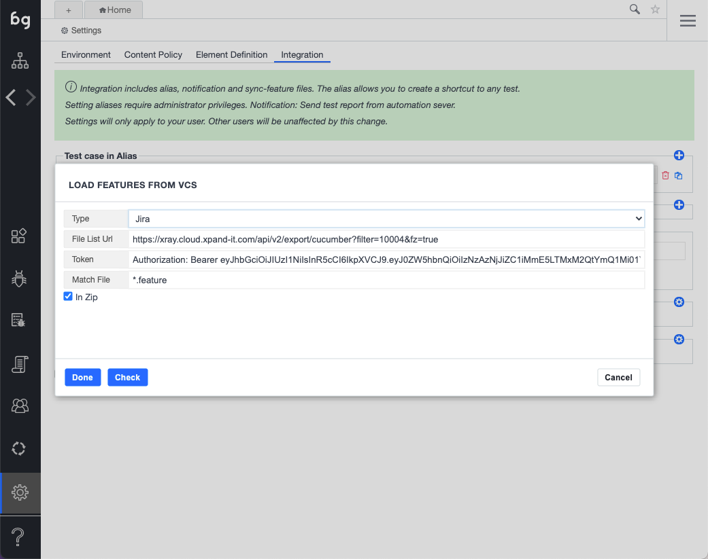
Xray for Jira

Xray for Jira is a complete, full-featured Atlassian verified test management add-on for Jira. Xray supports both manual and automated tests and a complete testing life cycle: test planning, test designing, and test execution to help developers improve the quality of their systems.
Xray for Jira is an add-on developed by Xpand Add-ons, an Atlassian Solution Partner.
Concept
Boozang integrates to Xray regardless if you are running Xray on Jira Cloud or Jira on-premise. Xray acts as the source of truth for Cucumber features and test results, while Boozang is responsible for test step implementation and test execution. This way, XRay becomes the main business interface, while Boozang works as the test engine.
Below is a schematic of how this setup looks using the Jenkins CI server. The connection between Boozang and Xray is independent of the CI server, and the CI server connects directly to Xray to report back the results.

Integration Steps
These are the steps needed on the Xray side to enable connection with Boozang
- Get API key (Cloud) or access credentials (on-premise) to allow for XRay integration
- Define scenarios in XRay
- Link scenarios to features in XRay
- Define a Jira filter that matches the desired scenarios
These are the steps needed on the Boozang side to connect with Xray
- Add the XRay API key to Boozang integrations
- Synchronize features
These are the steps needed on the CI server side to report results back to Xray
- Define a Boozang CI job
- Add the CI step to upload features on XRay
Xray: Add API key
Always consult the official XRay documentation for the latest updates and features: https://docs.getxray.app/display/XRAYCLOUD/Global+Settings%3A+API+Keys
The first thing you want to do is to add an API key to access Xray Restful API. To do this, you'll need to access XRay Admin view. You will be able to select "API keys" from the sidebar and click "Create API Key" from the interface.
XRay: Defining scenarios
XRay and Boozang both support regular Scenarios and Scenario Outlines, so there is a one-to-one mapping between these entities. As a starting point, you will need at least one Cucumber scenario defined in Xray.
If you don't have a sample scenario handy, you can can find an example scenario sample in our GitHub repository:
https://raw.githubusercontent.com/ljunggren/bz-utils/main/test/cucumber-sample-scenario.txt
Below is an example of a data-driven scenario outline defined on the XRay side.

XRay: Linking scenarios to features
The link between Boozang and XRay is done on a feature level, any scenarios to be linked with Boozang will have to be part of a feature. In XRay, this is done by linking issues together. Start by creating a feature in XRay
- Create - New Feature
- Link issues -> Is tested by... -> Select scenario to link

XRay / Jira: Defining a filter
Lastly, to be able to fetch scenarios over the API you will need to define a filter in Jira.
- Go to Filters -> Advanced Issue Search
- Use the JQL to retrieve only automated scenarios
- Save filter

- Extract the filter ID from the URL
The JQL for the filter we ended up using in this example was
project = Pivo AND issueType = test AND testType = CucumberBoozang: Adding the API token
Launch Boozang IDE from the hosting centre of your choice
- Americas: https://ai.boozang.com
- Europe / Asia: https://eu.boozang.com
and create a project if needed. As soon as the project is launched, the Boozang IDE will be launched in the web browser. To setup the integration to Jira / XRay you want to first add the client credentials to be able to retrieve the features from Xray.
The integration view in Boozang can be found at Settings - > Integrations -> Feature file server
For Jira Cloud installation
In the integration dialog, set the following

- Type: Set Jira / Xray
- File List URL: https://xray.cloud.xpand-it.com/api/v2/export/cucumber?filter=10004&fz=true
- Make sure to set the filter ID to match the filter you setup previously
- Token: For the Cloud install, this will be generated autyomatically from your credential info
- Client ID: Set your client id from the Xray API page
- Client Secret: Set your client secret from the Xray API page
- Match file: Leave as *.feature or the file ending you are using
For Jira on-premise installation

- Type: Set Jira / Xray
- File List URL: Set it to your on-premise API connection URL.
- Make sure to set the filter ID to match the filter you setup previously
- Token: For the on-premise install, you can generate a long-lived token and enter it directly.
- Client ID: For a hard-coded long-lived token, you can leave this blank. If you rather refresh the token, based on client from the XRay API page.
- Client Secret: For a hard-coded long-lived token, you can leave this blank. If you rather refresh the token, based on client from the XRay API page.
- Match file: Leave as *.feature or the file ending you are using for feature files
After you have entered all access information, check the connection using "Check". On successful connection, the features synchronized should be shown in the UI. Click "Done" to save the configuration.
Boozang: Synchronizing features
Boozang now needs to load the features you need from Xray. You can do that the following way
- Open the project in question in Boozang IDE
- Go to the root of the project
- Click the kebab menu
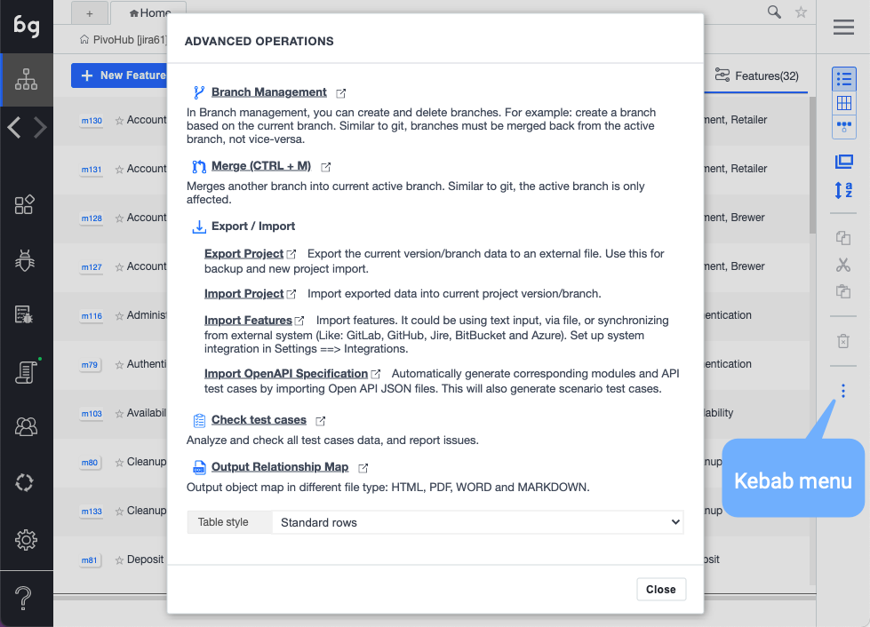
- Click "Import features"
- Select "Sync from server"
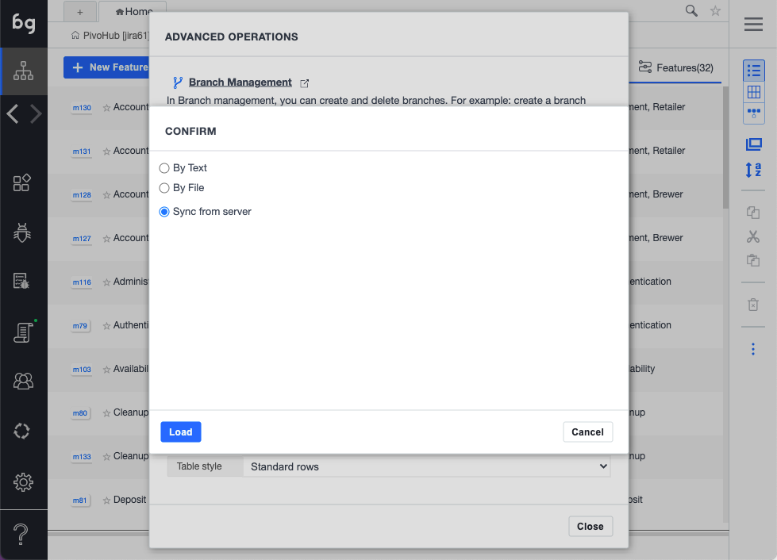
- Select features to synchronize

- Click "Start". The features will now be synchronized with Boozang.
- Navigate to a scenario, such as "Set default payment method"
- You should see all test steps in "Red", as they are unlinked
Note: If you already have linked test steps, any new test steps with the same exact syntax ((Give I am logged in), will be automatically linked, and will be shown as black.
Boozang: Implement the test steps
Now it's time to create the test steps implementation. The test steps are implemented in the code domain of Boozang, which can be found under "Modules" in the root.
- Go to the root of the project
- Go to the "Modules" tab ( as opposed to "Features" tab, which is the business domain, where Cucumber Features and Scenarios live ).
- Create a new module, for example "Payment".
- Create a new test, for example "Place an order"
- Record the steps for this particular test step
Note: You can also leave this test empty. It will execute successfully by default, and you can worry about the implementation later.
Boozang: Link the test steps
It's now time to connect the "business domain" to the "code domain". This is done using a "plug-test case" action, which is the only action supported in a sceanrio.
- Go to your Cucumber feature
- Click into the scenario you want to link
- Use the drop-down to link the scenario
- After the test has been linked, the test step should go from red to black.
Note: If it's a data-driven test a Cucumber scenario outline) data will be passed between the "business domain" and the "code domain" using test parameters.

Boozang: Test run the scenario
Now it's time to test run the scenario. Boozang supports a number of different play modes. The regular play should be good at this point.
- Navigate to the scenario
- Click "Play" to execute the scenario in the browser
- Follow the test execution in the execution window
- Make sure the scenario executes succesfully end-to-end (or have it fail, if that's what you expect)
CI: Define a Boozang CI job
As soon as you have implemented some or all tests steps in Boozang, it time to run them on a CI server.
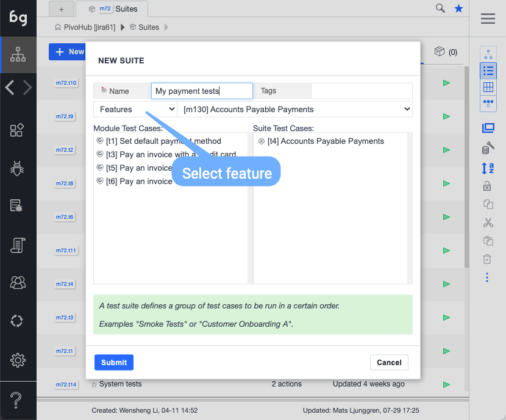
- Go to the Root -> Modules ("code domain")
- Create a new module called "Suites"
- Create a new test suite ("My payment tests")
- Define a test suite containing the features/scenarios you need
- Go to the Boozang CI view

- Select the CI integration server of your choice, or simply click "Generate CI URL"
- Generate a CI sample script by selecting the test you need in the CI wizard
- Enter Boozang password
- Copy the CI integration script into the CI server of your choice
- Start a CI test execution and verify the result
Tip: Use the Cucumber report plugin or similar to make sure you have well-formed Cucumber report files generated.
CI: Upload scenarios on XRay (Jenkins)
Follow the XRay documentation to upload the Cucumber report files.
Jenkins integration for Jira XRay on-premise:
https://docs.getxray.app/display/XRAY/Integration+with+Jenkins
Jenkins integration for Jira / XRay in Cloud
https://docs.getxray.app/display/XRAYCLOUD/Integration+with+Jenkins
Sample integration code for upload of scenarios
To quickly test the upload of scenarios to Xray we build a sample script. This scripts downloads a sample Cucumber report from our GitHub repository and posts it to Xray. The script can be found here
https://raw.githubusercontent.com/ljunggren/bz-utils/main/scripts/test-xray-scenario-upload.sh
It's a simple script that fetches a report file, generates a token from your credentials, and tries to upload the report to Xray.
Option 1 - run the script contents
#/bin/bash
# This scripts test integration with Xray and assumes you have defined the following scenario in Jira
# https://raw.githubusercontent.com/ljunggren/bz-utils/main/test/cucumber-sample-scenario.txt
# Make sure you export your client id and client secret as environment variables
# export CLIENT_ID=my-secret-id
# export CLIENT_SECRET=my-secret-secret
# Get report sample file from GitHub
curl https://raw.githubusercontent.com/ljunggren/bz-utils/main/test/cucumber-sample-report.json --output results.json
echo Checking: ${CLIENT_ID} ${CLIENT_SECRET}
echo Checking: curl -H "Content-Type: application/json" -X POST --data '{ "client_id": "'${CLIENT_ID}'","client_secret": "'${CLIENT_SECRET}'"}'
TOKEN=$(curl -H "Content-Type: application/json" -X POST --data '{ "client_id": "'${CLIENT_ID}'","client_secret": "'${CLIENT_SECRET}'"}' https://xray.cloud.xpand-it.com/api/v1/authenticate | sed 's/\"//g')
echo $TOKEN
curl -H "Content-Type: application/json" -X POST -H "Authorization: Bearer ${TOKEN}" --data @results.json https://xray.cloud.xpand-it.com/api/v2/import/execution/cucumberOption 2 - download the script and run it
# This scripts test integration with Xray and assumes you have defined the fo9llowing sceanrio in Jira
# https://raw.githubusercontent.com/ljunggren/bz-utils/main/test/cucumber-sample-scenario.txt
# Make sure you export your client id and client secret as environment variables
# export CLIENT_ID=my-secret-id
# export CLIENT_SECRET=my-secret-secret
# Get report sample file from GitHub
curl https://raw.githubusercontent.com/ljunggren/bz-utils/main/scripts/test-xray-scenario-upload.sh --output test-xray-scenario-upload.sh
chmod +x test-xray-scenario-upload.sh
./test-xray-scenario-upload.sh
To use the script, you first have to set your Xray API credentials as environment variables in the shell you are using (for instance - the Jenkins "Execute Shell" step).
export CLIENT_ID=my-secret-id
export CLIENT_SECRET=my-secret-secretIf you want to try it with different execution status (Pass, Fail, Not Implemented)
# Get report sample file from GitHub (success)
curl https://raw.githubusercontent.com/ljunggren/bz-utils/main/test/cucumber-sample-report-success.json --output results.json
# Get report sample file from GitHub (failure)
curl https://raw.githubusercontent.com/ljunggren/bz-utils/main/test/cucumber-sample-report-fail.json --output results.json
# Get report sample file from GitHub (not implemented)
curl https://raw.githubusercontent.com/ljunggren/bz-utils/main/test/cucumber-sample-report-not-implemented.json --output results.jsonSee below sample from XRay
GitLab
This documentation is in progress. In the meantime, check out https://boozang.com/enterprise-boozang-working-with-github/
GitHub
This documentation is in progress. In the meantime, check out https://boozang.com/enterprise-boozang-working-with-github/
BitBucket
This documentation is in progress. In the meantime, check out https://boozang.com/enterprise-boozang-working-with-github/
Model-based testing
This section will focus on automated test creation driven by models. A model is simply a classification of different components and elements in your application that allows the Boozang engine to automatically generate function tests and simple workflows. This will give you a great starting point for your application testing.
Advantages of model-based testing
Auto-generated re-usable test steps
As the application model is created, the Boozang engine will create a series of auto-generated tests that can be used to build upstream tests.
Auto-generated workflows
As the application model is created, the Boozang engine will create simple workflow tests for common test scenarios. These will act as a blueprint to create all higher-order tests.
Test Stability
Model-based testing is completely different from recording scenarios, as tests are automatically updated as the model changes. This means if an aspect of the application changes, only that part of the model needs to be updated, and all tests will automatically be updated.
Graphical overview
By creating a model of your application, a full graphical representation of the application is created. This gives everyone in the application team a complete picture of all application logic, and ...
Non-requirement driven tests
By modeling the application, the Boozang engine can auto-generate tests that do not originate from business requirements but are still important. This gives you a baseline of tests to work as a health check for the application functionality.
Security

Fragment security
When installing the bz-fragment we get the security of the web browser without the limitation of being bound to Chrome extension policy. This limits cross-browser execution but allows running Boozang without the need of any Extension.
Note: This requires access to the application directory to install an HTML fragment.
GDPR
As we are running locally in your web browser, it´s been easier to be GDPR compliant than for regular Cloud-testing services. We recommend that you'll host sensitive test data in CSV files hosted on your servers. That way, the data will never be loaded into our Cloud and be present in the browser local storage on the test computers.
Hosting
In our Cloud, we host the data you enter into our system and the tests, including our proprietary element selectors. To get an understanding of the kind of data we store, you can look at the Source tab on any test. Our servers are located in Canada.
Trade-offs
There are several limitations to the Boozang technology, some that are a limiting factor of the technology and security of the browser context, and others that are conscious product decisions. Here is an attempt to address some of them head-on.
Only web
Boozang support only testing web and hybrid applications. There are plenty of good tools to test native and desktop applications in the market, and we will be happy to recommend some. When doing testing across web and native/desktop, we recommend driving the tests on the web over Boozang while driving the other tests over another tool. Boozang has excellent support to read data from external sources and is designed to be able to have a source of truth outside the tool.
No tests are driven from the Cloud
Boozang doesn´t currently drive your tests from the Cloud. The Boozang technology allows us to host your tests and allow you to drive them locally from your browser. This has the benefit that we can operate behind your company firewall without any problem. It also means that you can host the test data locally and serve it up to your local web browser.
As our test runner is open source and can be used and modified freely, we welcome companies and Cloud testing providers to do so, and we welcome serious partnership proposals.
Limited BI
Long-term, we will expand our reporting capability and business intelligence functions. As we expose our reports in both JSON and HTML, and fully support integration over REST or via our test-runner (DIY), we are welcoming you to integrate into your Business Intelligence system of choice and for you to see Boozang as one source of insights among many.
Frequent Maintenance Releases
We do nightly maintenance releases frequently, sometimes as often as once per week. All paying subscribers will be notified when this release takes place, but often they are done 10 pm - 1 am EST during Sundays (this timeslot works for both European and American customers and amounts to a maximum of 30 seconds of service down-time). This means that we generally can provide less than a one-week turnaround on bugs reported by our customers.
Testing patterns and anti-patterns
Introduction
In programming, we sometimes talk about design patterns. The idea of a design pattern is a recipe to solve a particular problem. Any given problem in programming can have many solution candidates. The design pattern helps guide the user to the simplest and best possible solution to a problem. That's why following design patterns doesn't only show you the way to solve a given problem. It also conveys a best practice. There are many reasons to follow best-practice solutions. Here are a few:
- Following documented processes increase code readability and collaboration in development teams
- Design pattern solutions are often performant
- Versatility: Code built with design patterns are usually easier to update when a problem changes
Common anti-patterns
Before we start discussing good testing practices, let's first establish some common practices that we should try to avoid.
Long tests
A common mistake when using record-and-replay technology is to record an end-to-end test as a single long test. With record and replay functionality, this is tempting, but as you scale, the test stack tends to grow very large. Over time test maintenance becomes a big problem, and as soon as a single part of the application changes, it will impact many tests.
How to remedy
Try instead to divide your tests into many small tests and plug them together using the "plug test-case" action. This will lead to better re-usability and lower test maintenance.
Refatoring tips
If you have a long test recording of an end-to-end test, you can highlight a set of actions and use "Generate test-case and reference". By doing this, the actions are broken out into a new test, instead generating a "plug test-case". This way, the test is broken down into smaller units that can be re-used by other tests.
Hard-coded tests
Another common anti-pattern is to hard-code data entries. This is particularly bad when recording tests that contain forms that need to be filled.
How to remedy
Try to utilize data as much as possible here. Form data is best represented by JSON objects, while a single data field can be represented by a property.
Refactoring tips
If you have a recording where the data has been hard-coded, simply introduce the data, and use Boozang smart data replacement functionality to make the test data-driven.
Long delays
When test on top of slow applications, it's tempting to add delays to tests. This will usually stabilize the test but will lead to long execution times. As Boozang has automated re-try functionality, this is very rarely necessary.
How to remedy
Instead of using delays, increase the timeout for the action when needed. An increased timeout will not slow down the test if the application is responsive. Also, if a particular action fails, the Boozang AI repair will suggest adding a time-out, so this can very easily be fine-tuned.
Refactoring tips
If you have a test with a lot of delays, keep an eye out for the red timer icon. Where you see the delay, remove it and try increasing the time-out instead.
Testing patterns
We are therefore trying to do the same work for test automation, string a particular automation problem and providing an example template on how to solve it using Boozang. As there isn't much literature around this to lean on, this will be a work-in-progress.
How to read this section
The content will be divided into three sections.
The problem
Here you can find a (somewhat silly) example of a test automation problem that needs to be solved. There will also always be an interactive example for you to test one including a link to a resource on TheLab (http://thelab.boozang.com).
The pattern
In this section, there will be a brief description of the pattern that solves the problem.
Implementation details
In this section, there will be an explanation on how this can be solved in the Boozang tool, including screenshots of the test.
Boozang code example
There will also be a code example from the editor tab to further clarify this pattern.
Conditional Patterns
Conditional patterns deals with descision making.
If pattern
The problem
In "Red or yellow" (http://thelab.boozang.com/yellowOrRed), a color can be generated by clicking the button "Generate Color". We want to make sure that the user hits the red button if "red" is being generated and does nothing otherwise.
The pattern
The if-pattern is the standard conditional pattern from programming that involves doing an action if a condition is met. In test automation, this involves a validation (or assertion).
Implementation details
In Boozang, this can be implemented in two ways
- Using two different tests ("main", "click red button") and using validation exit conditions in main to call the other test
- Using one test a group with an exit group condition
To keep it simple, we are using the group method

As you can see from the example, we have added a break group exit option on Validation - On Failed. This means that if the word "red" is shown, the validation will succeed, and the "red" button will be pressed. If the word "yellow" is shown, the validation will fail, and execution of the rest of the actions contained in that group will stop.
Boozang code example
Click "Red or yellow" "Generate color" button
Group: ""
Validate [exist]: "Red or yellow" "red" main heading
fail:break group
Click "Red or yellow" "Red" buttonIf-else pattern
The problem
Using the if-pattern in "Red or yellow" (http://thelab.boozang.com/yellowOrRed) only solves the issue for the red button. When yellow is shown, nothing is done, which is far from ideal. Let's make sure that when yellow shows, the yellow button is pressed.
The pattern
The if-else condition is like the if-pattern, except that when a condition isn't met, an alternative action is triggered.
Implementation details
This is done by using two groups: an if-group followed by an else-group. If the previous group was broken out of, the test execution enters the else-group
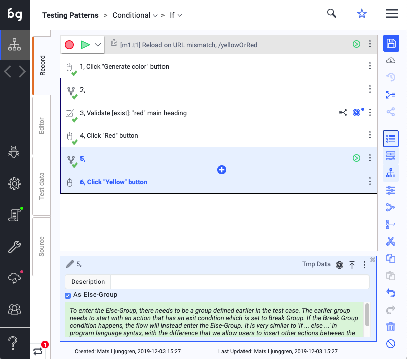
Boozang code example
Click "Red or yellow" "Generate color" button
Group: ""
Validate [exist]: "Red or yellow" "red" main heading
fail:break group
Click "Red or yellow" "Red" button
Group: ""
Click "Red or yellow" "Yellow" buttonSwitch pattern
The problem
In this example, we want to do a set of action depending on who is logged in (http://thelab.boozang.com/randomLogin). When being logged in as "Lemur" a single button should be pressed. When logged in as "Zebra" two button should be pressed and when logged in as "Lion" three buttons should be pressed. You can play around by this by hitting the "Random Login" button.
The pattern
The switch pattern evaluates several conditions in a sequence and triggers actions accordingly.
Implementation details
This is done in Boozang by a set of groups with validation exit conditions. Make sure that each validation condition has the "Break Group" exit option enabled.
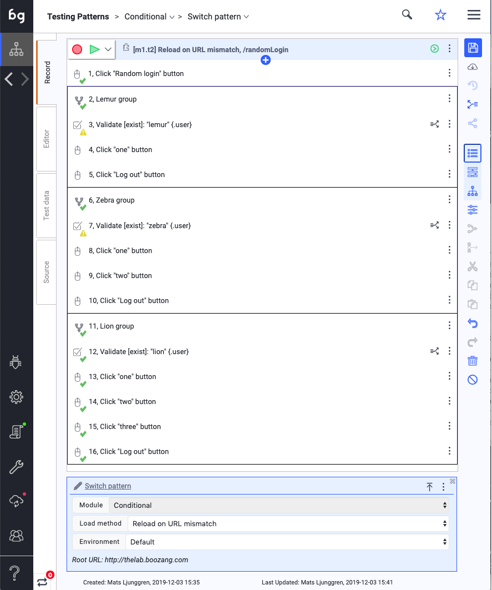
Boozang code example
Click "Role" "Random login" button
//Lemur group
Group: "Lemur group"
Validate [exist]: "lemur" "lemur" {.user}
fail:break group
Click "lemur" "one" button
Click "lemur" "Log out" button
//Zebra group
Group: "Zebra group"
Validate [exist]: "zebra" "zebra" {.user}
fail:break group
Click "Since I am the" "one" button
Click "Since I am the" "two" button
Click "zebra" "Log out" button
//Lion group
Group: "Lion group"
Validate [exist]: "lion" "lion" {.user}
fail:break group
Click "Since I am the" "one" button
Click "Since I am the" "two" button
Click "Since I am the" "three" button
Click "lion" "Log out" buttonRepeater patterns
Repeater patterns are used to repeat a certain action.
While pattern
The problem
In this example ("http://thelab.boozang.com/scramble") a number of things can be changed
The while pattern is used to repeat an action until a condition is fulfilled. The while pattern can be implemented two ways in Boozang
- Plug test case with a repeater set on the plug action level plus a validation on the downstream test case.
- A self-referring plug test case (a plug test case to the same test) plus a validation test case that exits the loop.
This is done in Boozang

This results in the following Boozang code
Validate [exist]: "Scramble items" "lion" button
success:break
fail:report success
Click "Scramble items" "Scramble Content" button
Call: [m2.t1] Current Test caseLoop over array pattern
The problem
In some instances, you want to loop over an entire data set. For instance, in Sorted Lists (http://thelab.boozang.com/sortedList), a user can add a series of todos to a TODO list.
The pattern
The loop over array pattern uses built-in loop functionality to loop over an array data set. The loop data handle will contain the value of the array entity. For instance, when looping over an array chores="Walk the dog","Feed the bird","Clean the house" the test will be executed 3 times and the $loop will take the values "Walk the dog", "Feed the bird" and "Clean respectively.
Implementation details

The Boozang code
Set "Sorted list" "Add new Item" input = ({{$loop}})
Keygroup[ENTER] "Sorted list" "Add new Item" inputLoop over CSV pattern
The problem
Sometimes it's useful to be able to loop over more complicated data sets. In Role-based Login (http://thelab.boozang.com/roleBasedLogin) we would like to test the login of a set of users. A single user has both role, username, and password, which makes arrays unsuitable. Instead, we can use a comma-separated file to contain this data.
The pattern
The loop over CSV pattern is used to loop over a more complicated data set. When looping over a CSV, such as $test.loginInfo below
role username password
lion lion@thelab.com iamthelion
zebra zebra@thelab.com iamthezebra
lemur lemur@thelab.com iamthelemurthe $loop data handle will take a value of the JSON object
$loop = {"role":"lion",
"username": "lion@thelab.com",
"password": "iamthelion"}$loop = {"user":"zebra",
"username": "zebra@thelab.com",
"password": "iamthezebra"}$loop = {"user":"lemur",
"username": "lemur@thelab.com",
"password": "iamthelemur"}Implementation details

The Boozang code
loop: $test.loginInfo [start=0]
Set "Role" "Email" input = ({{$loop.username}})
Set "Role" "Password" input = ({{$loop.password}})
Click "Role" "Log in" button
Click ($loop.role)"@thelab.com" "Log out" buttonDo n times pattern
The problem
Sometimes it's useful to repeat an action or test n times. We illustrate that using Tables (http://thelab.boozang.com/tables). Here we would like to delete a certain number of items.
The pattern
The do n times pattern is a repeater pattern that simply executes an action n times. In Boozang, this is done by using the plug test case and specifying the number of times the test case should be executed.
Implementation details
In Boozang code
Call: [m3.t1] Helper tests.Delete from table
Call: [m2.t4] Current Test caseRe-try n times pattern
This pattern needs to be ...
Every two pattern
Sometimes there is a need to do a certain action on odd or even iterations only. This can be true when executing ...
Stability patterns
Timeout pattern
Delay pattern
Example: An E-commerce project
Introduction
In this example, we will illustrate how to automate a simple E-commerce application using Boozang. We will use Cucumber syntax to define the acceptance tests first, then show how to structure the automated tests in Boozang.
The shop can be found at: http://shopnx.boozang.com
Project: ShopNX
ShopNX is a clothing shop that sells various clothes. Browsing around in the shop briefly, you can see that it's fairly high-end as prices are not cheap. In the main storefront, there are several filters for brand, price, etc. and there is also a search function. For each clothing article, you can either add it directly to the shopping cart or click into the shopping cart for more details.
Of course, this site has not been built yet. Imagine that we are just at the beginning of the project, planning out the work in order to build this E-commerce application.
The team
Our team consists of development resources and quality assurance analysts. There is also a product owner that fills the role of the customer, and tracks the progress of the project. Even though the team collaborates well, development and quality assurance work is still considered different tasks, because of the different skillsets required. They have used Cucumber in the past, programming automated tests in Selenium. For this project, they have chosen to use Boozang as it allows the quality assurance analysts to contribute to the test automation without adding work-load to the development team.
Requirements
From the product owner, we have received a set of requirements for a set of features. Our business analysts have then written scenarios in Cucumber/Gherkin syntax. It's just the beginning of the project so nothing has been implemented yet. Still, it's a good idea to finalize the acceptance criteria early on in the true BDD/TDD spirit. This will help our development team to stay focused and avoid any unnecessary work.
Here is a breakdown of the features
- Storefront: The main view where you shop for clothes
- Filters: The filter functionality where we can filter on different tags
- Search: Allow you to search the inventory
- Cart: Allows users to purchase items
- Checkout: The checkout secured inventory and takes down customer information
- Payment: Processes the payment
The project plan
The team follows an Agile methodology, but as there is very limited time to complete the project, the timeline is fairly aggressive. See preliminary plan below:
- Sprint 0: Planning
- Sprint 1: Storefront and filters completed
- Sprint 2: Cart and search completed
- Sprint 3: Checkout and payment completed
Gherkin Scenarios
Here is a list of scenarios that need to be tested.
Storefront: View item
Given a user visit the site
When a <product-name> is clicked on
Then then the product details page should be shown
And the price should be <product_price>Storefront: Add to cart
Given a user visits the store
When a user adds <product_name> to the cart
Then the cart should contain <product_name>Cart: Clear cart
Given a user has an item in the cart
When a user clears the cart
Then the cart should be emptyCheckout: Filling user details
Given a user is at the checkout page
When a user fills in their details
Then the next step should be paymentPayment: Paying for the goods
Given a user is at the payment page
When a user fills in his valid <credit_card> details
Then they should be able to complete the orderImporting features in Boozang
Why import early?
Even though no implementation work has been done yet, these scenarios can be imported in Boozang. Actually, it's recommended that these are imported as soon as they have been created. This will allow for the following benefits
- Find possible mistakes in the Gherkin syntax
- Discover missing scenarios early
- Create executable requirement spec for the development team
- Align business stakeholders
- Prepare CI integration
Doing the import
Below you can find the view in Boozang after the import.
...
Running the report
You can also go ahead and run the features, even if they are not implemented. As you can see, the error message "Not implemented" is shown for each test step. You can even go as far as setting up the test job on your CI server and configure email notifications. This way, the whole team will get notified from the beginning the work needs to be done and can track the progress from beginning to end. This is also a way to keep business stakeholders updated and reduce reporting overhead.
...
Implementing the tests
Creating the project modules
Before implementation starts, you can go ahead and structure the project into modules. This is an art, not a science, and require a lot of practice to get right. The rule of thumb is to follow the modular structure of the code, not the business requirements. The key here is re-use, and as the features are often driven by customer or business stakeholders, these are not always the best people to determine how the tests should be structured. In this particular example, the feature list is pretty well aligned with the implementation details. So for simplicity, I have used the same module structure as feature structure. Note that this is not the common case.
We have the following modules:
- Storefront: The main view where you shop for clothes
- Filters: The filter functionality where we can filter on different tags
- Search: Allow you to search the inventory
- Cart: Allows users to purchase items
- Checkout: The checkout secured inventory and takes down customer information
- Payment: Processes the payment
You can see them in Boozang in the picture below.
...
Setting up the data
Project, module and test scope
Just as you can start creating the modules even before there is no implementation work started, you can also start defining all the data. The key to choose the right scope for the data. Normally, use the $project scope for data that is used by all the modules, $module scope for data used within a module, and $test scope for local data for the test.
The parameter scope
The $parameter scope can be used in two ways. Either use it to control all the data running in a test. This makes the tests flexible but sometimes a little heavy on the parameter side. This means that there might be a tendency to create large example sets in the Gherkin scenarios, which sometimes isn't desirable. You can also use the parameter scope to control which set of test data should be loaded. This makes the test light on the parameter side but means you'll need to keep maintaining data sets for modules and tests, which has its own drawbacks. Below is an illustration of both examples
Payment: Paying for the goods - parameter light version
Given a user is at the payment page
When a user fills in his valid <credit_card> details
Then they should be able to complete the order
Examples:
|credit_card|
|VISA |
|Mastercard |Payment: Paying for the goods - parameter heavy version
Given a user is at the payment page
When a user selects <credit_card>
and fills in his <card_number>, <valid_date> and <ccv>
Then they should be able to complete the order
Examples:
|credit_card|valid_date|ccv|
|VISA |11/21 |991|
|Mastercard |10/22 |133|Normally, both these version are acceptable, and depends how much the data mangement should be done on the Gherkin side. In this example we will use a parameter-light version, which keeps our Gherkin language short and clean, and where example data management is taken care of on the code domain, rather than the business domain.
Note: One potential benefit of the parameter-light version is when example data is available in CSV files. Instead of replicating this data in the scenarios, these can be loaded dynamically by Boozang in run-time.
The data breakdown
Opting for the parameter-light approach, we are ready to introduce the example data for our ShopNX project. We have decided on the following data
Project scope: $project.products [matrix data]
The products data contains a list of test products that should always be available in our test system. It contains information, such as the product name, if the product is available, and the price. As we might have a large set of products, we should choose matrix or CSV data. In order to easily retrieve the data, we have opted for matrix data.
Module scope: Checkout $module.validCustomer [json data], $module.invalidCustomer [json data]
The customer data contains all the data about the customer, such as name and address. We have chosen to use JSON data as we only have a few customer accounts that we run tests on.
Module scope: Payment $module.creditCard [matrix data]
The creditCard data contains all the credit card information, such as card number, valid, and CVV. We have chosen matrix data to be able to easily maintain a large set of test credit cards.
Below you can see an example of the $project.products data
...
Implementing the tests
Checklist
We have now completed all the work that can be done pre-implementation. If everything has been done right, we have a set of test cases that will run on our CI server, maybe nightly, sending out notifications to the whole team, product owners, and business stakeholders, of all the work that remains to be done. As you can imagine, these reports can crowd the mailbox, so it's recommended to use a rule to send them to a special folder. Regardless, with our without email notifications, there is now a single point of truth describing the project readiness.
First sprint
Development team
The first sprint has been completed, and the project is on track. The development team has already developed the Storefront and Filters. As part of the definition of done, the development team has committed to create unit tests in Boozang that tests the functionality. They create the following tests (parameters are in parenthesis and are all JSON objects)
Storefront
Load storefront
View Item({"itemName": "dummyData"})
Validate Price({"itemName": "dummyData", "price": "dummyPrice"})
Add Item to Cart({"itemName": "dummyData"})
Filter
FilterByBrand({"brand": "dummyData"})
FilterByType({"brand": "dummyData"})
Unselect all filters()QA team
As the first Sprint conclude the QA team is curious to see how much of the requirements are actually fulfilled. They start mapping out their tests. In Boozang, it's quite straightforward. They notice that they can do the following mapping
a user visits the store -> Load front page
a <product-name> is clicked on -> View Item
the price should be <product_price> -> Validate PriceThey also notice that they are close to completing the first scenario, so they go ahead and record the a simple test that validates that the product details page is shown. They now have the full scenario for View Item running.
The project state
The project readiness can be seen in the Boozang report.
Second sprint
Development team
The project is still on track, and the development team has completed the second sprint. They have delivered according to plan the Search and Shopping Cart functionality. They have implemented the following tests
Cart
Clear cart()
Go to checkout()
Validate price in Cart ({"price":"dummyPrice"})
Check cart for product ({"productName":"dummyName"})
Search
Search by product name({"name": "dummyName"})
ValidateSearchResult({"name": "dummyName"})QA team
The QA team now sees more scenarios that have been unlocked and aims to complete the following:
Storefront: Add to cart
Given a user visits the store
When a user adds <product_name> to the cart
Then the cart should contain <product_name>Cart: Clear cart
Given a user has an item in the cart
When a user clears the cart
Then the cart should be emptyThey add the test Check if cart empty and do the following mapping
a user adds <product_name> to the cart -> Add Item to Cart
the cart should contain <product_name> -> Check cart for product
a user clears the cart -> Clear Cart
the cart should be empty -> Check if cart emptyThe project state
The project readiness can be seen from the Boozang report.
...
Third Sprint
Development team
In the third Sprint, the development team is off-track due to critical bugs in a different project. They only manage to implement the Checkout portion. They complete the following tests
Checkout
Fill user detailsQA team
As the QA team has been less stressed, they complete the tests isOnPaymentPage and creates the aggregate test Add product and checkout that aggregates previous tests created. They can now create the mappings
a user is at the checkout page -> Add product and checkout
the next step should be payment -> isOnPaymentPageThey can now complete the following scenario.
Checkout: Filling user details
Given a user is at the checkout page
When a user fills in their details
Then the next step should be paymentReport
The project readiness can be seen in the project report
Fourth Sprint
Development team
In the fourth Sprint, the development team completes the Payment feature as expected. They complete the following tests
Payment
- Pay using credit card({"card": "dummyCard"})QA team
The QA team can now complete all the feature tests. They create the following aggregate test Add product, checkout and pay and Validate order completed and do the following mapping
a user is at the payment page -> Add product, checkout and pay
a user fills in his valid <credit_card> details -> Pay using credit card
they should be able to complete the order -> Validate order completedThey now have the last scenario completed
Payment: Paying for the goods
Given a user is at the payment page
When a user fills in his valid <credit_card> details
Then they should be able to complete the orderProject status
The project readiness is reflected in the report. You can now see that all tests have passed and that all the requirements have been satisfied.
Retrospect
In the project retrospect, the development team, QA team, and other project stakeholders all meet and discuss what worked well and what needs to be improved.
A note on test aggregation
As you see in our example, the test aggregation was made on the test level. It's also perfectly fine to keep the test steps individually in the Gherkin domain. The following test
Payment: Paying for the goods
Given a user is at the payment page
When a user fills in his valid <credit_card> details
Then they should be able to complete the ordercould be re-written in the following way
Payment: Paying for the goods
Given a user visits the store
When a user adds <product_name> to the cart
And a user fills in their details
And a user fills in his valid <credit_card> details
Then they should be able to complete the orderThis is perfectly fine and up to each team to decide which way works best.
A note on multiple When/Then
Boozang also supports multiple When/Then conditions. This syntax runs perfectly fine in Boozang
Payment: Paying for the goods
Given a user visits the store
When a user adds <product_name> to the cart
Then the cart should contain <product_name>
When a user fills in their details
And a user fills in his valid <credit_card> details
Then they should be able to complete the orderUsing multiple When/Then statements is up to each team. An argument for keeping the singular structure (Given, When, Then) is that the Gherkin Scenario should be focused on testing a single aspect of the system. On the other hand, there are benefits to the other approach. For instance, for systems with long setup times (Given conditions are have long execution times) total test execution time can be greatly reduced by using multiple When-Then conditions. There will also be less housekeeping as fever scenarios need to be maintained.
A note on data states
All tests in our example were written with "stateless" Cucumber steps. That means that the outcome of a test step wasn't determined by any hidden data set by a previous step. This was done to simplify the example. Let's look at a slightly different way to write the Gherkin syntax, were we will introduce data states in Boozang. Look at the following scenario
Order: Email order receipt
Given a <user> visits the store
When adds <product_name> to the cart
And fills in their details
And fills in his valid <credit_card> details
Then they should be able to complete the order
and a receipt should be printed with the correct detailsThis might seem straightforward at first, but in the last step, we have actually introduced a data state dependency between the test steps. The user details being referred to, is not maintained as Gherkin example code and must therefore be transmitted between the steps. There are several ways of doing this. The simplest way would be to introduce the project-scope data currenUser that is always used. The first test step would seed the test and determine the user data for any following tests. Here is an example, how that might look
Initialize test data({"user":"dummyUserName"})
Validate receipt()To initialize test data, we would use a matrix data structure that takes the username and seeds the data on the project level. This would look as follows
$project.currentUser = $test.allUsers[$parameter.user]See example below:
...
Conclusion
Checklist
Here are the different activities that were done for each Sprint
- Sprint 0: Analyze requirements (QA), Write feature scenarios (QA), Create a module structure (devs), Create test data (devs)
- Sprint 1: Implement filters and storefront (devs), Automate testing for filters and storefront (QA)
- Sprint 2: Implement cart and search (devs), Automate testing for cart (QA)
- Sprint 3: Implement checkout (devs), Automate testing for checkout (QA)
- Sprint 4: Implement payment (devs) Automate testing for payment (QA)
- Retrospect: Discuss improvements (Devs, QA, other stakeholders)
Benefits
Even if this was a somewhat simplified and idealized project outline, it highlights some important benefits of this approach. As you can see, a lot of work can be done by the QA team early on. This avoids the problem where QA efforts need to be ramped up towards the end of the project. It also avoids misalignment where developers deliver what wasn't expected by the business stakeholders.
Appendix A
Useful functions
As Boozang supports the Javascript function data-type, there are a number of function examples that has proven useful in different kinds of projects.
Business and Currency
// Converts to 22.90 to CAD$22.90 and 22911.99 to CAD$22,911.99
toCurrency = function(amount){
if (amount){
const currency = new Intl.NumberFormat('en-CA', { style: 'currency', currency: 'CAD' }).format(amount);
return "CA"+currency;
}
else
return "";
}// Calculates Quebec gst
gst = function(amount){
if (amount){
const currency = new Intl.NumberFormat('en-CA', { style: 'currency', currency: 'CAD' }).format(amount);
return "CA"+currency;
}
else
return "";
}// Calculates Quebec qst
gst = function(quantity,price){
var subtotal = $module.subtotal(quantity,price);
return (Math.round(subtotal*9.975)/100).toFixed(2);
}// Calculates discounted price
function(price, percentage){
return (parseFloat(price)*(100-percentage)/100 + 0.00000000001).toFixed(2)
}Copyright (c) 2021 Boozang Technologies Inc.